اندلاع مُخفق في الثنائية السينية ذات النجم النيوتروني Centaurus X-4
الملخص
نعرض رصداً بصرياً طويل الأمد للثنائية السينية ذات النجم النيوتروني Centaurus X-4
أُنجز خلال السنوات 13.5 الماضية. ظل هذا المصدر في حالة سكون منذ اندلاعه في
1979. يكشف رصدنا التطور العام لقرص التراكم؛ إذ نرصد توهجات قصيرة المدة، يُرجح أنها تنشأ أيضاً في القرص، متراكبة مع تضمين إهليلجي صغير السعة ( 0.1
قدر) صادر عن النجم المرافق بفعل تأثيرات هندسية. ونرصد في منحنى ضوء القرص اتجاهاً هبوطياً طويل الأمد (
0.1
قدر) صادر عن النجم المرافق بفعل تأثيرات هندسية. ونرصد في منحنى ضوء القرص اتجاهاً هبوطياً طويل الأمد ( 2300 يوم)،
تلاه اتجاه صعودي أقصر (
2300 يوم)،
تلاه اتجاه صعودي أقصر ( 1000 يوم). وقد رُصد مثل هذا الارتفاع البصري في ثنائيات سينية أخرى قبل الاندلاعات، كما يتنبأ نموذج عدم استقرار القرص. وبالنسبة إلى Cen X-4، استمر ارتفاع الفيض البصري
مدة
1000 يوم). وقد رُصد مثل هذا الارتفاع البصري في ثنائيات سينية أخرى قبل الاندلاعات، كما يتنبأ نموذج عدم استقرار القرص. وبالنسبة إلى Cen X-4، استمر ارتفاع الفيض البصري
مدة  3 سنوات، وبلغ ذروته في زيادة في الفيض عند جميع الأطوال الموجية (البصرية وفوق البنفسجية والسينية) في نهاية 2020. وقد خفتت هذه الزيادة بعد
3 سنوات، وبلغ ذروته في زيادة في الفيض عند جميع الأطوال الموجية (البصرية وفوق البنفسجية والسينية) في نهاية 2020. وقد خفتت هذه الزيادة بعد  2 أسابيع، من غير أن تؤدي
إلى اندلاع كامل. نقترح أن انتشار جبهة تسخين من الداخل إلى الخارج قد أُشعل بسبب تأين جزئي للهيدروجين في القرص الداخلي. وربما
توقف الانتشار بعد وقت قصير من الاشتعال بسبب ازدياد الكثافة السطحية في القرص التي واجهتها الجبهة أثناء انتشارها إلى الخارج. ومن المرجح أن هذا التوقف سُهِّل بفعل المستوى المنخفض من تشعيع
المناطق الخارجية لقرص التراكم الكبير، كما يبينه ميل علاقة الارتباط بين البصري والأشعة السينية، مما يشير إلى أن التشعيع لا يؤدي دوراً قوياً في البصري مقارنة بمصادر الانبعاث الأخرى.
2 أسابيع، من غير أن تؤدي
إلى اندلاع كامل. نقترح أن انتشار جبهة تسخين من الداخل إلى الخارج قد أُشعل بسبب تأين جزئي للهيدروجين في القرص الداخلي. وربما
توقف الانتشار بعد وقت قصير من الاشتعال بسبب ازدياد الكثافة السطحية في القرص التي واجهتها الجبهة أثناء انتشارها إلى الخارج. ومن المرجح أن هذا التوقف سُهِّل بفعل المستوى المنخفض من تشعيع
المناطق الخارجية لقرص التراكم الكبير، كما يبينه ميل علاقة الارتباط بين البصري والأشعة السينية، مما يشير إلى أن التشعيع لا يؤدي دوراً قوياً في البصري مقارنة بمصادر الانبعاث الأخرى.
1 مقدمة
الثنائيات السينية منخفضة الكتلة (LMXBs) هي أنظمة ثنائية تستضيف جسماً مدمجاً، يمكن أن يكون نجماً نيوترونياً (NS) أو ثقباً أسود ذا كتلة نجمية (BH)، ونجماً مرافقاً منخفض الكتلة (بكتلة ). ويكون الأخير عادة نجماً من النسق الرئيسي يملأ فص روش وينقل المادة والزخم الزاوي إلى الجسم المدمج عبر تكوّن قرص تراكم. يمكن أن تكون LMXBs عابرة، فتُظهر اندلاعات قصيرة ومفاجئة بسطوعات في الأشعة السينية يمكن أن تبلغ ومعدلات تراكم مرتفعة، وفواصل أطول وأهدأ من السكون ينخفض فيها سطوع الأشعة السينية بما يصل إلى سبع رتب مقدار. وعند ترددات الأشعة السينية، تتسم الاندلاعات عادة بزيادة حادة في الفيض تستمر أياماً إلى أشهر، يعقبها اضمحلال أطول وأبطأ يمكن أن يحدث على مدى أسابيع أو أشهر، إلى أن تبلغ مستوى السكون السابق (Frank et al., 1987).
يأتي إشعاع الأشعة السينية عادة من الجزء الداخلي لقرص التراكم، قريباً من الجسم المدمج (Lasota, 2001)، ومن الهالة (وهي منطقة من بلازما إلكترونية حارة يُعتقد أنها تحيط بالجسم المدمج، وبحسب بعض النماذج، بقرص التراكم)، وفي حالة النجوم النيوترونية من الجسم المدمج نفسه؛ أما الإشعاع البصري، فيُعتقد من جهة أخرى أنه يأتي أساساً من النجم المرافق ومن الجزء الخارجي من القرص، مع هيمنة الأخير أثناء الاندلاعات، إضافة إلى مساهمة في بعض الأنظمة من إشعاع سنكروتروني صادر عن نفاثات مدمجة وموازاة (انظر مثلاً Homan et al. 2005; Russell et al. 2007; Buxton et al. 2012; Kalemci et al. 2013; Baglio et al. 2018; Baglio et al. 2020). ومن المتوقع أن يحدث ارتفاع في الفيض البصري مع ازدياد درجة الحرارة في القرص، مما يطلق تأين الهيدروجين الذي قد يبدأ الاندلاع (انظر Lasota 2001 للمراجعة).
لا تزال الآلية التي تطلق هذه الاندلاعات غير مؤكدة. والسيناريو الأكثر قبولاً يسمى نموذج عدم استقرار القرص (DIM؛ انظر Lasota 2001، Hameury 2020 للمراجعات).اقتُرح DIM أولاً لتفسير الاندلاعات في المستعرات القزمة (وهي فئة فرعية من المتغيرات الكارثية تُظهر اندلاعات متكررة؛ انظر Cannizzo et al. 1982)، ثم وُسّع إلى LMXBs بسبب التشابه الذي لوحظ بين فئتي الأنظمة أثناء الاندلاعات، ولا سيما فيما يتعلق بالارتفاع السريع والاضمحلال الأسي (van Paradijs and Verbunt 1984; Cannizzo et al. 1985). ووفقاً لـ DIM، فإن عدم الاستقرار تقوده حالة تأين الهيدروجين في القرص. فإذا كان كل الهيدروجين في القرص مؤيناً عُدَّ النظام مستقراً، كما يحدث مثلاً في LMXBs المستمرة أو في الأنظمة الشبيهة بالمستعرات (أي فئة المتغيرات الكارثية التي تُظهر سلوكاً مستمراً). أما إذا أصبح معدل تراكم الكتلة أو درجة الحرارة منخفضاً بما يكفي للسماح بإعادة اتحاد الهيدروجين، فيمكن أن يحدث عدم استقرار حراري لزج في القرص، يتأرجح بين حالة ساخنة مؤينة نسميها اندلاعات، وحالة باردة معاد اتحادها هي السكون. عندما يكون النظام في حالة سكون، يجمع قرص التراكم البارد كتلة حتى تبلغ كثافة حرجة، وفي الوقت نفسه ترتفع درجة الحرارة حتى تصل درجة حرارة تأين الهيدروجين عند نصف قطر معين (نقطة الاشتعال). وعند نقطة الاشتعال تتولد جبهتا تسخين (Smak 1984; Menou et al. 1999)، تنتشر إحداهما إلى الداخل والأخرى إلى الخارج.
يمكن رصد نوعين مختلفين من الاندلاعات، اعتماداً، قبل كل شيء، على سرعة انتشار الجبهتين. تبدأ اندلاعات “من الداخل إلى الخارج” عند أنصاف أقطار صغيرة، وستبلغ جبهة التسخين المتجهة إلى الداخل قرص التراكم الداخلي سريعاً؛ أما اندلاعات “من الخارج إلى الداخل” فتشتعل في موضع أبعد داخل القرص، ولذلك يستغرق الانتشار نحو القرص الداخلي وقتاً أطول. وبالإضافة إلى ذلك، تنتشر جبهة التسخين المتجهة إلى الخارج في الاندلاعات من الداخل إلى الخارج نحو مناطق ذات كثافات أعلى، في حين ستواجه الجبهات من الخارج إلى الداخل دائماً مناطق ذات كثافة سطحية متناقصة (Dubus et al., 2001). لذلك يسهل أكثر أن يتوقف اندلاع من الداخل إلى الخارج وأن تنشأ جبهة تبريد تطفئ الاندلاع. ومن ثم تنتشر الاندلاعات من الداخل إلى الخارج عادة ببطء، مؤدية إلى أزمنة ارتفاع طويلة للاندلاع.
ما إن يُطلَق الاندلاع، يستمر التراكم بمعدلات عالية، مولداً السطوع العالي المرصود في الأشعة السينية. ثم يبدأ الاندلاع في الاضمحلال، ويُستنزف القرص، فيعيد النظام إلى حالة السكون (Lasota, 2001).
هذه الصورة مبسطة جداً، وقد أظهرت دراسات عديدة أن تأثير التشعيع المباشر وغير المباشر من الجسم المدمج، إضافة إلى تبخر قرص التراكم في منطقة قريبة من الجسم المدمج (مثل الجريان الداخلي الحار، أو الهالة)، إضافة إلى التأثيرات الهندسية، كلها أمور مهمة يجب أخذها في الحسبان لكي يعمل DIM مع LMXBs (انظر Dubus et al. 1999، Dubus et al. 2001). وعلى وجه الخصوص، وُجد أن التشعيع يسهّل انتشار جبهة التسخين المتجهة إلى الخارج في الاندلاعات من الداخل إلى الخارج، وذلك بخفض الكثافة الحرجة اللازمة لكي تصبح حلقة معينة من القرص غير مستقرة حرارياً (Dubus et al., 2001). علاوة على ذلك، تُرصد بعض الاختلافات بين الأنظمة المختلفة؛ فعلى سبيل المثال، يمكن أن يختلف التأخر الزمني بين حدوث عدم استقرار القرص (المتزامن مع بدء انتشار جبهة التسخين في القرص) والبداية الفعلية للاندلاع (عندما يُرصد التراكم على الجسم المدمج كزيادة في سطوع الأشعة السينية) من نظام إلى آخر.
تعد رصدات الارتفاع البصري نحو الاندلاع حاسمة لاختبار DIM (ولا سيما قياس التأخر بين البصري والأشعة السينية في الارتفاع إلى الاندلاع، والزيادة البصرية التدريجية طويلة الأمد التي تُرصد أحياناً قبل إطلاق اندلاع). وللأسف، تكون مثل هذه الرصدات صعبة غالباً، لأن الاندلاعات ترتفع عادة خلال بضعة أيام، وكثيراً ما لا تُكتشف إلا عندما يرتفع فيض الأشعة السينية فوق عتبة كشف راصدات السماء كلها، مما يفوّت المراحل الأولى من الارتفاع البصري. وقد قيس مثل هذا التأخر بين البصري والأشعة السينية أثناء ارتفاع اندلاع باستخدام الرصد البصري وراصدات الأشعة السينية للسماء كلها في بضعة أنظمة، مثل V404 Cyg ( 7 يوم؛ Bernardini et al. 2016b)، وGRO J1655-40 ( أيام؛ Orosz and Bailyn 1997; Zhang et al. 2019a)، وXTE J1550-564 ( أيام؛ Jain et al. 2001)، وXTE J1118+480 (
7 يوم؛ Bernardini et al. 2016b)، وGRO J1655-40 ( أيام؛ Orosz and Bailyn 1997; Zhang et al. 2019a)، وXTE J1550-564 ( أيام؛ Jain et al. 2001)، وXTE J1118+480 ( 10 يوم؛ Wren et al. 2001; Zurita et al. 2006)، و4U 1543-47 ( أيام)، وASASSN-18ey (MAXI J1820+070؛ أيام؛ Tucker et al. 2018)، وAql X-1 (3-8 أيام؛ Shahbaz et al. 1998; Russell et al. 2019)، وغيرها. ومؤخراً، قيس تأخر قدره 12 أيام للنظام NS LMXB SAX J1808.4-3658 (Goodwin et al., 2020) باستخدام أداة أشعة سينية أكثر حساسية من راصد السماء كلها ()، مما قدم تأكيداً مهماً للتأخر بين البصري والأشعة السينية أثناء بدء الاندلاعات في LMXBs.
10 يوم؛ Wren et al. 2001; Zurita et al. 2006)، و4U 1543-47 ( أيام)، وASASSN-18ey (MAXI J1820+070؛ أيام؛ Tucker et al. 2018)، وAql X-1 (3-8 أيام؛ Shahbaz et al. 1998; Russell et al. 2019)، وغيرها. ومؤخراً، قيس تأخر قدره 12 أيام للنظام NS LMXB SAX J1808.4-3658 (Goodwin et al., 2020) باستخدام أداة أشعة سينية أكثر حساسية من راصد السماء كلها ()، مما قدم تأكيداً مهماً للتأخر بين البصري والأشعة السينية أثناء بدء الاندلاعات في LMXBs.
من الواضح أن الرصد البصري المستمر لـ LMXBs ضروري للحصول على مثل هذه القياسات، إلى جانب إنجازات أخرى كثيرة ممكنة (مثل دراسة سلوك المصادر في السكون، أو متابعة المراحل المختلفة لاندلاع LMXB؛ Russell et al. 2019). وكجزء من هذا الجهد، كنا نرصد من LMXBs بواسطة Las Cumbres Observatory (LCO) وتلسكوبات Faulkes الروبوتية ذات 2-m و1-m منذ 2008 (Lewis et al., 2008)، وطوّرنا حديثاً خط معالجة، هو X-ray Binary New Early Warning System (XB-NEWS)، قادر على معالجة كل البيانات المجموعة فور اقتنائها، وينتج منحنيات ضوئية آنية لجميع الأجسام المرصودة (لمزيد من التفاصيل عن المشروع، انظر Russell et al., 2019). ومنذ بدء الرصد وتشغيل خط المعالجة روتينياً، تمكنا من كشف بداية الاندلاعات في حالات قليلة قبل أن تتمكن راصدات الأشعة السينية للسماء كلها من ذلك، كما في حالة SAX J1808.4-3658 (Goodwin et al., 2020) والحالة المعروضة في هذا العمل.
2 Centaurus X-4
Cen X-4 (اختصاراً لـ Centaurus X-4) هو نظام NS LMXB، اكتُشف في يوليو 1969 أثناء اندلاع بواسطة القمر الصناعي للأشعة السينية Vela 5B (Conner et al., 1969). شهد المصدر اندلاعاً ثانياً بعد عشر سنوات، في 1979، كما كشفته تجربة All-Sky Monitor على القمر الصناعي Ariel 5 (Kaluzienski et al., 1980)، وأُبلغ عن كشوفات راديوية (Hjellming, 1979). وحُدد النظير البصري بجسم لامع أزرق، ازداد لمعانه إلى قدر من (Canizares et al., 1980). ولاحقاً صُنّف النجم المرافق على أنه نجم  K5–7 V، يملأ فص روش
K5–7 V، يملأ فص روش  (Shahbaz et al. 1993; Torres et al. 2002; D’Avanzo et al. 2005; Shahbaz et al. 2014a). وقد قيّم Shahbaz et al. (2014a) أيضاً نسبة كتلتي النجمين بعناية، وبفضل ذلك اشتُق تقدير دقيق نسبياً لكتلة النجم النيوتروني ().
قيس الدور المداري بتقنيات مختلفة، مؤدياً إلى دور قدره
(Shahbaz et al. 1993; Torres et al. 2002; D’Avanzo et al. 2005; Shahbaz et al. 2014a). وقد قيّم Shahbaz et al. (2014a) أيضاً نسبة كتلتي النجمين بعناية، وبفضل ذلك اشتُق تقدير دقيق نسبياً لكتلة النجم النيوتروني ().
قيس الدور المداري بتقنيات مختلفة، مؤدياً إلى دور قدره  hr (انظر McClintock and Remillard 1990; Torres et al. 2002; Casares et al. 2007).
يعد Cen X-4 واحداً من ألمع أنظمة NS-LMXBs الساكنة في البصري، بقدر
hr (انظر McClintock and Remillard 1990; Torres et al. 2002; Casares et al. 2007).
يعد Cen X-4 واحداً من ألمع أنظمة NS-LMXBs الساكنة في البصري، بقدر  ، وله مساهمة غير مهملة من قرص التراكم عند الترددات البصرية حتى في السكون (Shahbaz et al. 1993, Torres et al. 2002, D’Avanzo et al. 2005).
الامتصاص بين النجمي منخفض، قدر (Russell et al., 2006)، والمسافة إلى النظام kpc (Chevalier et al., 1989)، وهي متسقة على نحو معقول مع أحدث تقدير حصل عليه Gaia ( kpc؛ Bailer-Jones et al. 2018).
، وله مساهمة غير مهملة من قرص التراكم عند الترددات البصرية حتى في السكون (Shahbaz et al. 1993, Torres et al. 2002, D’Avanzo et al. 2005).
الامتصاص بين النجمي منخفض، قدر (Russell et al., 2006)، والمسافة إلى النظام kpc (Chevalier et al., 1989)، وهي متسقة على نحو معقول مع أحدث تقدير حصل عليه Gaia ( kpc؛ Bailer-Jones et al. 2018).
ظل Cen X-4 في حالة سكون منذ نهاية اندلاعه الثاني في 1979. وفي ديسمبر 2020، أُبلغ عن مؤشرات على احتمال حدوث ازدياد تدريجي في اللمعان خلال السنوات  السابقة بفضل رصد بصري للمصدر أجري بتلسكوبات LCO الروبوتية ذات 2-m و1-m (Waterval et al., 2020). بعد 2020 أغسطس 31 (MJD 59092)، كان المصدر مقيداً بالشمس حتى 2020 ديسمبر 30 (MJD 59213)؛ وأظهرت أول رصدات LCO بعد انتهاء القيد الشمسي ازدياداً كبيراً في اللمعان في جميع الحزم البصرية (Saikia et al., 2021)، نتج عنه بعد ذلك نشاط توهجي بارز استمر
السابقة بفضل رصد بصري للمصدر أجري بتلسكوبات LCO الروبوتية ذات 2-m و1-m (Waterval et al., 2020). بعد 2020 أغسطس 31 (MJD 59092)، كان المصدر مقيداً بالشمس حتى 2020 ديسمبر 30 (MJD 59213)؛ وأظهرت أول رصدات LCO بعد انتهاء القيد الشمسي ازدياداً كبيراً في اللمعان في جميع الحزم البصرية (Saikia et al., 2021)، نتج عنه بعد ذلك نشاط توهجي بارز استمر  أسابيع. وبحلول منتصف يناير، عاد المصدر إلى مستوياته الساكنة عند جميع الأطوال الموجية (van den Eijnden et al., 2021a).
في هذه الورقة، نقدم رصداً بصرياً طويل الأمد لـ Cen X–4، أدى إلى التنبؤ باندلاع جديد محتمل، ونبلغ عن نشاط التوهج المرصود لاحقاً باستخدام رصدات بصرية ورصدات بالأشعة السينية.
استُخدمت، لأغراض البرمجة في كامل الدراسة المعروضة في هذا العمل، حزم Python الآتية: Matplotlib (Hunter, 2007) وNumPy (Van Der Walt et al., 2011). كما أُجريت تحليلات بيانات إضافية باستخدام IDL الإصدار 8.7.3.
أسابيع. وبحلول منتصف يناير، عاد المصدر إلى مستوياته الساكنة عند جميع الأطوال الموجية (van den Eijnden et al., 2021a).
في هذه الورقة، نقدم رصداً بصرياً طويل الأمد لـ Cen X–4، أدى إلى التنبؤ باندلاع جديد محتمل، ونبلغ عن نشاط التوهج المرصود لاحقاً باستخدام رصدات بصرية ورصدات بالأشعة السينية.
استُخدمت، لأغراض البرمجة في كامل الدراسة المعروضة في هذا العمل، حزم Python الآتية: Matplotlib (Hunter, 2007) وNumPy (Van Der Walt et al., 2011). كما أُجريت تحليلات بيانات إضافية باستخدام IDL الإصدار 8.7.3.
3 الرصد وتحليل البيانات
3.1 الرصد البصري باستخدام LCO
رُصد Cen X-4 بانتظام في البصري خلال السنوات الماضية باستخدام تلسكوبات LCO الروبوتية ذات 2-m و1-m، من فبراير 14، 2008 (MJD 54510) إلى يونيو 30، 2021 (MJD 59395)، مستخدمين في الغالب مرشحات  و
و و (الجدول 1). وإجمالاً، حصلت حملة الرصد حتى 2021 يونيو 30 على 316 و183 و315 صورة في
و (الجدول 1). وإجمالاً، حصلت حملة الرصد حتى 2021 يونيو 30 على 316 و183 و315 صورة في  و
و و، على التوالي، إضافة إلى 110 و36 صورة في مرشحي و، على التوالي. عولجت الصور وحُللت بواسطة خط معالجة XB-NEWS المطور حديثاً، الذي ينزل الصور المختزلة (أي الصور المصححة للانحياز والظلمة والمجال المسطح) من أرشيف LCO11
1
https://archive.lco.global، ويرفض تلقائياً الصور المختزلة الرديئة الجودة، وينجز القياس الفلكي باستخدام مواضع Gaia DR222
2
https://www.cosmos.esa.int/web/gaia/dr2، ويجري القياس الضوئي متعدد الفتحات (MAP؛ Stetson 1990)، ويحل إزاحات نقطة الصفر الضوئية بين الحقب (Bramich and Freudling, 2012)، ويعاير القياس الضوئي في الفيض باستخدام فهرس ATLAS-REFCAT2 (Tonry et al., 2018). وإذا لم يُكشف الهدف في صورة فوق عتبة الكشف، يجري XB-NEWS قياس MAP قسرياً عند إحداثيات الهدف. في هذه الحالة، نرفض كل مقادير MAP القسرية ذات لايقين قدر، لأنها قياسات ضوئية غير مؤكدة جداً. وينتج خط المعالجة منحنيات ضوئية معايرة شبه آنية. ولمزيد من التفاصيل عن XB-NEWS، انظر Russell et al. (2019) وGoodwin et al. (2020).
و، على التوالي، إضافة إلى 110 و36 صورة في مرشحي و، على التوالي. عولجت الصور وحُللت بواسطة خط معالجة XB-NEWS المطور حديثاً، الذي ينزل الصور المختزلة (أي الصور المصححة للانحياز والظلمة والمجال المسطح) من أرشيف LCO11
1
https://archive.lco.global، ويرفض تلقائياً الصور المختزلة الرديئة الجودة، وينجز القياس الفلكي باستخدام مواضع Gaia DR222
2
https://www.cosmos.esa.int/web/gaia/dr2، ويجري القياس الضوئي متعدد الفتحات (MAP؛ Stetson 1990)، ويحل إزاحات نقطة الصفر الضوئية بين الحقب (Bramich and Freudling, 2012)، ويعاير القياس الضوئي في الفيض باستخدام فهرس ATLAS-REFCAT2 (Tonry et al., 2018). وإذا لم يُكشف الهدف في صورة فوق عتبة الكشف، يجري XB-NEWS قياس MAP قسرياً عند إحداثيات الهدف. في هذه الحالة، نرفض كل مقادير MAP القسرية ذات لايقين قدر، لأنها قياسات ضوئية غير مؤكدة جداً. وينتج خط المعالجة منحنيات ضوئية معايرة شبه آنية. ولمزيد من التفاصيل عن XB-NEWS، انظر Russell et al. (2019) وGoodwin et al. (2020).
| Filter | (Hz) | Filter | (Hz) |
|---|---|---|---|
من خلال الفحص البصري للمنحنيات الضوئية، كانت ظاهرةً وجودُ عدد من القيم الشاذة. لذلك أجرينا بحثاً منهجياً عن القيم الشاذة في المنحنيات الضوئية برسم كل حزمة مقابل الأخرى، مستخدمين رصدات مأخوذة بفاصل أقصاه 0.5 أيام. ثم اخترنا كل النقاط الواقعة خارج مجال 2-سيغما وفحصنا الصور المقابلة. ووجدنا أن غالبية هذه الصور (بمجموع 9 في حزم  و
و و، على التوالي) رديئة الجودة لأسباب متنوعة (أي مشكلات في الخلفية)، ولذلك رُفضت.
و، على التوالي) رديئة الجودة لأسباب متنوعة (أي مشكلات في الخلفية)، ولذلك رُفضت.
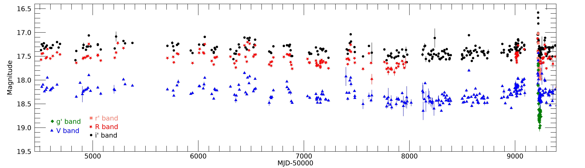
 و و
و و و. جميع المقادير معايرة؛ وتمثل أشرطة الخطأ لايقينات
و. جميع المقادير معايرة؛ وتمثل أشرطة الخطأ لايقينات  .
.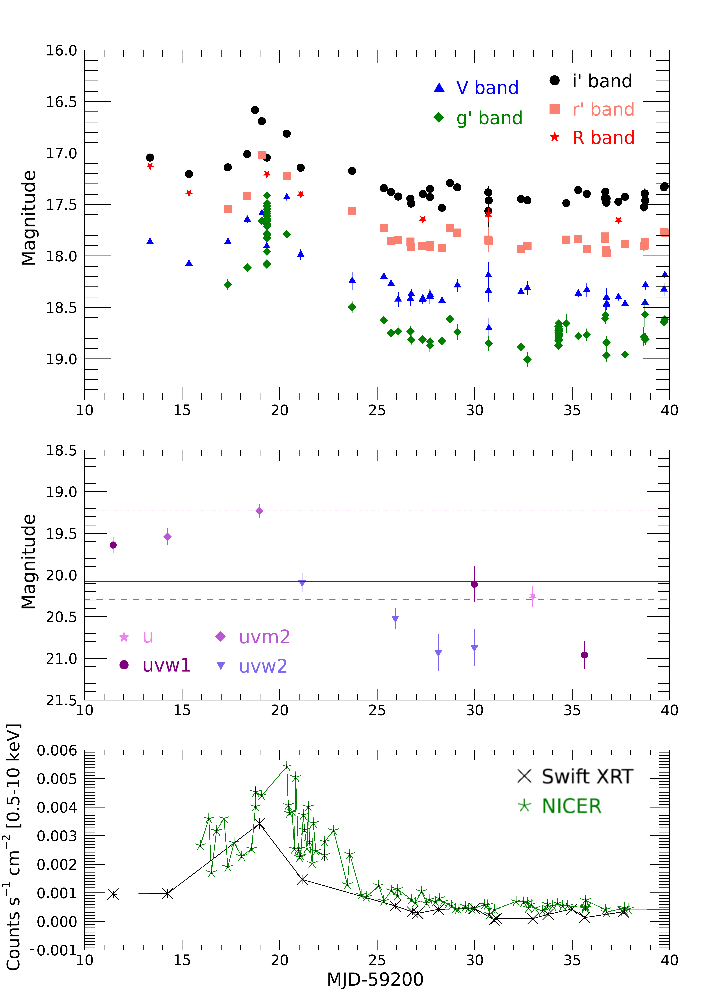
 و و
و و و (الجدول
و (الجدول 3.2 الرصد البصري والقريب من تحت الأحمر باستخدام REM
رُصد Cen X-4 في يناير 5، 2021 (MJD 59219) باستخدام تلسكوب 60cm Rapid Eye Mount (REM؛ Zerbi et al. 2001; Covino et al. 2004) في La Silla، تشيلي. وحصلنا على رصدات متزامنة تماماً بزمن تكامل 300s باستخدام مرشحات SDSS البصرية (الجدول 1)، بمجموع 9 رصدة لكل مرشح. اختُزلت الصور باستخدام إجراءات معيارية (طرح الانحياز وتصحيح المجال المسطح)، وأُجري قياس ضوئي بالفتحة للنجوم في الحقل باستخدام PHOT في IRAF33 3 يوزع IRAF بواسطة National Optical Astronomy Observatory، التي تديرها Association of Universities for Research in Astronomy, Inc.، بموجب اتفاقية تعاون مع National Science Foundation.. ثم عُيّر القياس الضوئي في الفيض باستخدام نجوم APASS44 4 http://www.aavso.org/download-apass-data في الحقل (Henden, 2019).
ثم رُصد النظام مرة أخرى في مايو 22، 2021 (MJD 59356) باستخدام REM. اقتُنيت الرصدات في حزم SDSS البصرية و و و، بتزامن تام (تكامل 90s، بمجموع 26 صورة/مرشح). وأُجري اختزال البيانات البصرية وتحليلها كما وصفنا أعلاه.
وفي الوقت نفسه، اقتُنيت رصدات NIR (حزم 2MASS  ) بكاميرا REMIR المثبتة على REM، مع تبديل المرشحات، وباستخدام تعريضات زمن تكاملها 15s. واقتُني ما مجموعه 90 صورة/مرشح. وأُجري تزحزح للصور بهدف تقييم مساهمة السماء المتغيرة، التي طُرحت بعد ذلك من كل صورة. ثم جُمعت الصور 5 في 5 لزيادة نسبة الإشارة إلى الضجيج. وأُجري معايرة فيض صور NIR مقابل مجموعة من نجوم 2MASS في الحقل.
) بكاميرا REMIR المثبتة على REM، مع تبديل المرشحات، وباستخدام تعريضات زمن تكاملها 15s. واقتُني ما مجموعه 90 صورة/مرشح. وأُجري تزحزح للصور بهدف تقييم مساهمة السماء المتغيرة، التي طُرحت بعد ذلك من كل صورة. ثم جُمعت الصور 5 في 5 لزيادة نسبة الإشارة إلى الضجيج. وأُجري معايرة فيض صور NIR مقابل مجموعة من نجوم 2MASS في الحقل.
3.3 رصد Swift بالأشعة السينية والبصري/فوق البنفسجي
رصد مرصد Neil Gehrels Swift (يشار إليه فيما يلي بـ Swift؛ Burrows et al., 2005a) المصدر Cen X–4 عدد 16 مرات بين 2020 ديسمبر 28 و2021 يناير 23 باستخدام أداتي X-Ray Telescope (XRT؛ Burrows et al. 2005b) وUltraviolet and Optical Telescope (UVOT؛ Roming et al. 2005). وبالنسبة إلى XRT، حللنا فقط البيانات التي حُصل عليها عندما كانت الأداة في نمط Photon Counting، إذ كان المصدر خافتاً جداً بحيث لا يُكشف في تعريضات Window Timing القصيرة. ولكل رصدة XRT، استخرجنا أطياف المصدر من فتحة دائرية نصف قطرها 20 بكسل ( 47″) ومركزها المصدر. واستُخرجت أطياف الخلفية فقط من حلقة ذات نصف قطر داخلي وخارجي مقدارهما 40 و60 بكسل (
47″) ومركزها المصدر. واستُخرجت أطياف الخلفية فقط من حلقة ذات نصف قطر داخلي وخارجي مقدارهما 40 و60 بكسل ( 94″ و
94″ و 141″)، على التوالي، ومركزها أيضاً المصدر. ومن الأطياف المطروح منها الخلفية أنشأنا منحنى ضوئياً في نطاق 0.5–10 keV (بنقطة بيانات واحدة لكل رصدة)، مصححين للتغيرات في المساحة الفعالة بين الرصدات الناتجة عن اختلاف أثر الأعمدة الرديئة في عدّات المصدر.
141″)، على التوالي، ومركزها أيضاً المصدر. ومن الأطياف المطروح منها الخلفية أنشأنا منحنى ضوئياً في نطاق 0.5–10 keV (بنقطة بيانات واحدة لكل رصدة)، مصححين للتغيرات في المساحة الفعالة بين الرصدات الناتجة عن اختلاف أثر الأعمدة الرديئة في عدّات المصدر.
رصدت أداة UVOT المصدر Cen X-4 أثناء توهج 2020/2021، باستخدام جميع المرشحات المتاحة ( و
و و
و و و و)، بمجموع 14 حقبة بين MJD 59211 (2020 ديسمبر 28) وMJD 59237 (2021 يناير 23). حُللت البيانات باستخدام روتين HEASOFT uvotsource، مع تعريف منطقة الاستخراج كفتحة دائرية مركزها المصدر ونصف قطرها 3 ثانية قوسية، وتعريف
الخلفية كفتحة دائرية (بعيداً عن المصدر) بنصف قطر 10 ثانية قوسية.
حصلنا على عدة كشوفات، إضافة إلى بعض الحدود العليا في جميع الحزم. وتُعرض المنحنيات الضوئية في اللوحة الوسطى من الشكل 2.
و و و)، بمجموع 14 حقبة بين MJD 59211 (2020 ديسمبر 28) وMJD 59237 (2021 يناير 23). حُللت البيانات باستخدام روتين HEASOFT uvotsource، مع تعريف منطقة الاستخراج كفتحة دائرية مركزها المصدر ونصف قطرها 3 ثانية قوسية، وتعريف
الخلفية كفتحة دائرية (بعيداً عن المصدر) بنصف قطر 10 ثانية قوسية.
حصلنا على عدة كشوفات، إضافة إلى بعض الحدود العليا في جميع الحزم. وتُعرض المنحنيات الضوئية في اللوحة الوسطى من الشكل 2.
3.4 رصد NICER
رصد Neutron Star Interior Composition Explorer (NICER؛ Gendreau et al. 2012; Gendreau et al. 2016) المصدر Cen X-4 على نطاق واسع في أوائل 2021. حللنا كل الرصدات المنجزة بين يناير 1 وفبراير 19. وأُعيدت معالجة الرصدات، التي يتكون كل منها من فاصل زمني جيد واحد أو أكثر، باستخدام النص nicerl2، وهو جزء من حزمة NICERDAS في HEASOFT v6.28، باستخدام إصدار المعايرة 20200722.
استُخرجت الأطياف لكل فاصل زمني جيد (GTI) باستخدام الأداة nibackgen3C50، التي تنشئ أيضاً أطياف الخلفية (Remillard et al., 2021). وفي بعض GTIs، لم يكن من الممكن مطابقة المعلمات المستخدمة لحساب أطياف الخلفية مع المكتبة المحسوبة مسبقاً لأطياف الخلفية التي يستخدمها nibackgen3C50. وفي تلك الحالات استُبعد GTI من تحليلنا، تاركاً ما مجموعه 186 طيفاً، بأزمنة تعريض تراوحت من 51 s إلى 2627 s.
استُخرجت منحنيات ضوئية مطروح منها الخلفية في نطاق 0.5-10 keV من الأطياف، بحيث تمثل كل نقطة بيانات معدل العد المتوسط لفاصل GTI واحد. وكشف فحص المنحنى الضوئي الناتج عن توهج قوي خلال الفاصل الزمني MJD 59240–59250 (من يناير 26 إلى فبراير 5، 2021)، كان على الأرجح بسبب خلفية متبقية. وبترشيح GTIs التي كان فيها معدل عد الخلفية في نطاق 0.5-10 keV يساوي 0.5 counts s-1، أُزيلت هذه الحلقات “التوهجية” إزالة شبه كاملة. وأُزيلت يدوياً عدة قيم شاذة مشبوهة في MJD 59241-59242 وبعد MJD 59260.
4 النتائج
4.1 الرصد البصري طويل الأمد
تُعرض المنحنيات الضوئية البصرية طويلة الأمد التي حصلنا عليها باستخدام LCO في الشكل 1. وتُرصد تغيرية قوية تتميز بانبعاث توهجات أو انخفاضات بصرية من رتبة تصل إلى مقادير على مقاييس زمنية تبلغ 1-2 أشهر. وقد أُبلغ سابقاً عن مستوى مشابه من النشاط في البصري بواسطة Zurita et al. (2003)، وفي الأشعة السينية/فوق البنفسجية بواسطة Campana et al. 2004 وBernardini et al. (2013). علاوة على ذلك، يُرصد اتجاه تناقص في متوسط الفيض البصري في الرصد طويل الأمد، حتى  MJD 58016 (سبتمبر 20، 2017). وبعد ذلك التاريخ، ازداد متوسط الفيض تدريجياً حتى قبيل بداية فترة القيد الشمسي في 2020 (أي سبتمبر 2020).
وترتبط أي تغيرية طويلة الأمد في منحنى الضوء البصري لـ LMXBs عادة بتطور قرص التراكم (انظر مثلاً حالة V404 Cyg؛ Bernardini et al. 2016b)، أو، نادراً، بتطور النفاثة (كما في حالة Swift J1357.2-0933؛ Russell et al. 2018؛ Caruso et al. قيد الإعداد). أما مساهمة النجم المرافق فمن المتوقع أن تُظهر تضميناً إهليلجياً ذا حدبتين عند الدور المداري للمصدر (Orosz and Bailyn, 1997).
نعرف من دراسات سابقة أن من غير المرجح أن تسهم النفاثات في الانبعاث البصري الساكن لـ Cen X-4 (Baglio et al., 2014)، ولذلك سنركز أساساً على انبعاث قرص التراكم.
ولتقدير مستوى تغيرية قرص التراكم المستقر، حددنا أولاً عتبة فيض لانبعاث التوهجات. ويرجح أن تنشأ التوهجات في قرص التراكم، وربما تكون بسبب تغيرية في معدل التراكم تحدث على المقياس الزمني اللزج (أيام إلى أسابيع)، أو قد تكون مرتبطة بالتشعيع ولها مقاييس زمنية من ثوان إلى دقائق.
MJD 58016 (سبتمبر 20، 2017). وبعد ذلك التاريخ، ازداد متوسط الفيض تدريجياً حتى قبيل بداية فترة القيد الشمسي في 2020 (أي سبتمبر 2020).
وترتبط أي تغيرية طويلة الأمد في منحنى الضوء البصري لـ LMXBs عادة بتطور قرص التراكم (انظر مثلاً حالة V404 Cyg؛ Bernardini et al. 2016b)، أو، نادراً، بتطور النفاثة (كما في حالة Swift J1357.2-0933؛ Russell et al. 2018؛ Caruso et al. قيد الإعداد). أما مساهمة النجم المرافق فمن المتوقع أن تُظهر تضميناً إهليلجياً ذا حدبتين عند الدور المداري للمصدر (Orosz and Bailyn, 1997).
نعرف من دراسات سابقة أن من غير المرجح أن تسهم النفاثات في الانبعاث البصري الساكن لـ Cen X-4 (Baglio et al., 2014)، ولذلك سنركز أساساً على انبعاث قرص التراكم.
ولتقدير مستوى تغيرية قرص التراكم المستقر، حددنا أولاً عتبة فيض لانبعاث التوهجات. ويرجح أن تنشأ التوهجات في قرص التراكم، وربما تكون بسبب تغيرية في معدل التراكم تحدث على المقياس الزمني اللزج (أيام إلى أسابيع)، أو قد تكون مرتبطة بالتشعيع ولها مقاييس زمنية من ثوان إلى دقائق.
اتباعاً لعمل Jonker et al. (2008) على النابض السيني الملّي ثانية المتراكم IGR J00291+5934، طوينا أولاً المنحنيات الضوئية على الدور المداري المعروف للمصدر (0.6290630 يوم؛ McClintock and Remillard 1990)؛ ثم حددنا عتبة مقدار محتملة تكون النقاط الأكثر لمعاناً منها مفترضة على أنها توهجات من القرص، وأزلنا جميع المقادير الأشد لمعاناً من العتبة في كل حزمة. ثم قسمنا هذه النقاط إلى 20 حاويات متساوية العرض من الطور المداري. ولتقريب التضمين الإهليلجي ذي الحدبتين لانبعاث النجم المرافق على نحو أفضل، أجرينا ملاءمة مربعات صغرى موزونة غير خطية للمقادير المحواة ( ) مقابل بيانات الطور (
) مقابل بيانات الطور ( ) بدالة جيبية مزدوجة مضافاً إليها ثابت: m=، حيث
) بدالة جيبية مزدوجة مضافاً إليها ثابت: m=، حيث  مقدار ثابت، و
مقدار ثابت، و هو الطور المقابل للاقتران السفلي للنجم المرافق، و و
هو الطور المقابل للاقتران السفلي للنجم المرافق، و و هما نصفا سعتي الاهتزازين؛ ونلاحظ أن أحد الاهتزازين له دورية مزدوجة ثابتة بالنسبة إلى الآخر، وأن المعلمات الحرة للملاءمة هي
هما نصفا سعتي الاهتزازين؛ ونلاحظ أن أحد الاهتزازين له دورية مزدوجة ثابتة بالنسبة إلى الآخر، وأن المعلمات الحرة للملاءمة هي  و
و و
و و
و . حسبنا
. حسبنا  ودرجات الحرية (dof) للملاءمة. ثم غيّرنا قيمة العتبة وكررنا الخطوات أعلاه. وفي النهاية، رسمنا نتائجنا في مخطط
ودرجات الحرية (dof) للملاءمة. ثم غيّرنا قيمة العتبة وكررنا الخطوات أعلاه. وفي النهاية، رسمنا نتائجنا في مخطط  مقابل عدد درجات الحرية لجميع الحزم (انظر الشكل 3 لمخطط الحزمة
مقابل عدد درجات الحرية لجميع الحزم (انظر الشكل 3 لمخطط الحزمة  )؛ وكما في Jonker et al. (2008)، تكون العلاقة خطية حتى مستوى معين، ثم تنحرف عن الارتباط الخطي. لذلك اتخذنا النقطة التي يحدث عندها الانحراف مستوى عتبة للتوهجات: قدر، و قدر، و قدر.
)؛ وكما في Jonker et al. (2008)، تكون العلاقة خطية حتى مستوى معين، ثم تنحرف عن الارتباط الخطي. لذلك اتخذنا النقطة التي يحدث عندها الانحراف مستوى عتبة للتوهجات: قدر، و قدر، و قدر.
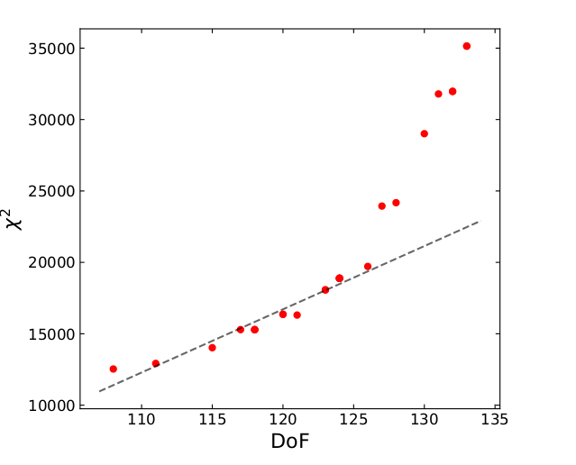
 لملاءمة دالة جيبية مزدوجة مضافاً إليها ثابت لمنحنى الضوء في الحزمة
لملاءمة دالة جيبية مزدوجة مضافاً إليها ثابت لمنحنى الضوء في الحزمة  لـ Cen X-4 مقابل عدد درجات الحرية في الملاءمة لعتبات المقدار المختلفة التي نظرنا فيها. وفوق ذلك رسمنا خطاً متقطعاً يقابل الملاءمة الخطية للنقاط ذات أدنى درجات حرية، قبل حدوث الانتقال إلى ارتباط أشد انحداراً.
لـ Cen X-4 مقابل عدد درجات الحرية في الملاءمة لعتبات المقدار المختلفة التي نظرنا فيها. وفوق ذلك رسمنا خطاً متقطعاً يقابل الملاءمة الخطية للنقاط ذات أدنى درجات حرية، قبل حدوث الانتقال إلى ارتباط أشد انحداراً. بعد استبعاد كل التوهجات، تُظهر المنحنيات الضوئية المطوية تضميناً متوقعاً من النجم المرافق وبعض التشتت (أخطاء القياس الضوئي أصغر بكثير من التشتت المرصود؛ الشكل 4). وفي جميع المرشحات، يكون نصف سعة التضمينات منخفضاً ( قدر).
قدر).
أجرينا أولاً ملاءمة بنموذج الدالة الجيبية المزدوجة لتقييم معلمات التضمين. غير أن المنحنيات الضوئية ما زالت تتضمن مساهمة مهمة من قرص التراكم. ولعزل التضمين الصادر عن النجم المرافق، قدّرنا الغلاف السفلي للتضمين اتباعاً لـ Pavlenko et al. (1996) وZurita et al. (2004). قسمنا المنحنيات الضوئية إلى 10 حاويات طور متطابقة؛ ولكل حاوية وجدنا اللمعان الأدنى؛ وعرّفنا انبعاث الغلاف السفلي بأنه كل الرصدات التي تختلف عن هذا الحد الأدنى بما لا يتجاوز ضعفي متوسط لايقين الرصدات 10 الأخفت في الحاوية. ثم أجرينا ملاءمة الغلاف السفلي للتضمين بنموذج الجيب المزدوج، مع تثبيت معلمات التضمين على القيم التي حصلنا عليها للمنحنيات الضوئية كلها بعد إزالة التوهجات (الخط المتصل في الشكل 4). ويقابل المقدار الثابت للتضمين و و.
يُرسم الغلاف السفلي للتضمين كخط متصل في الشكل 4.
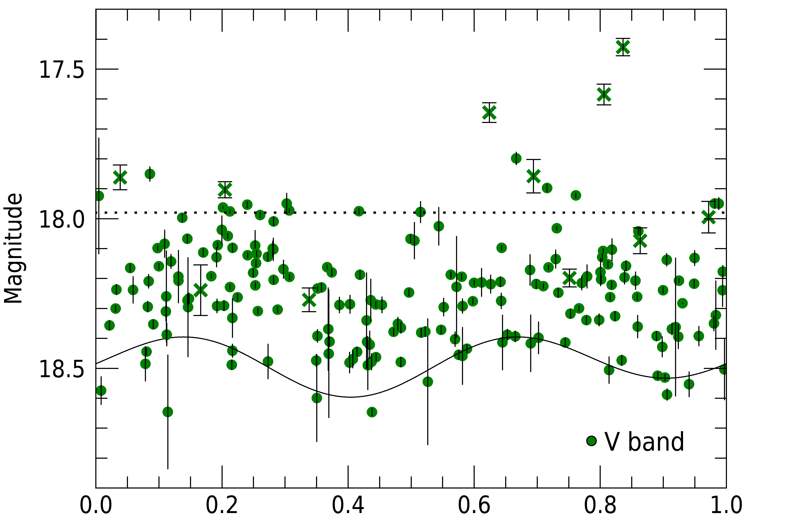
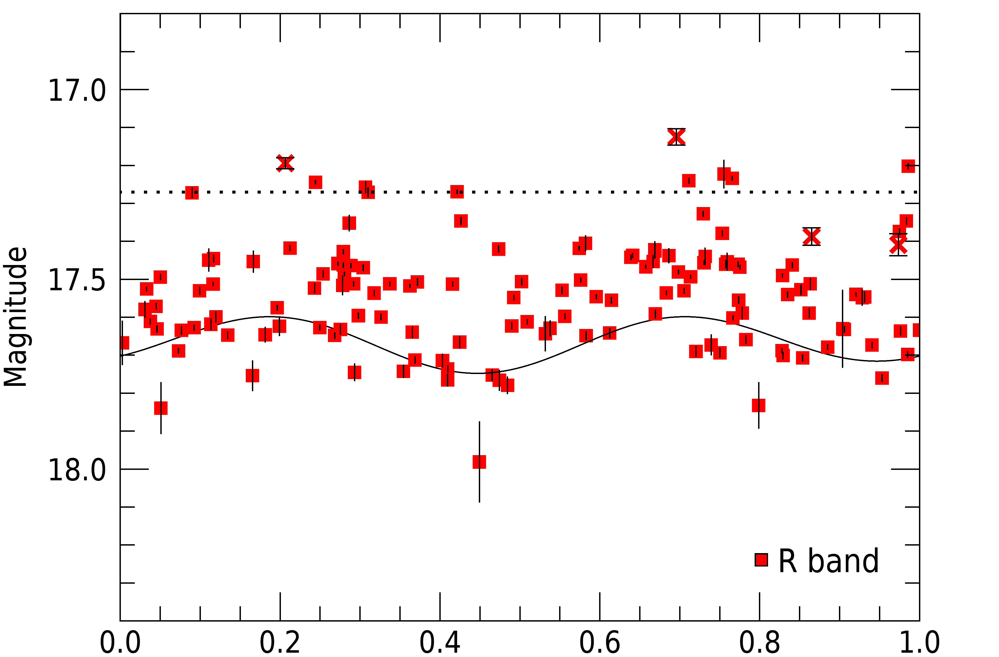
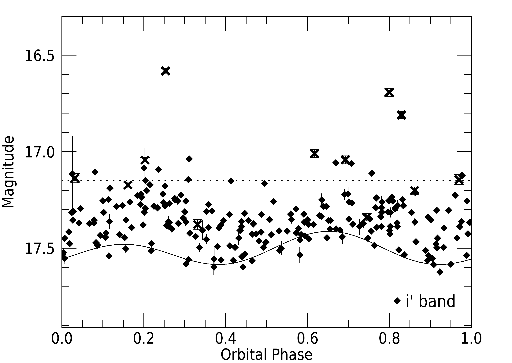
 و
و و مطوية على الدور المداري البالغ hr (McClintock and Remillard, 1990). حُسبت الأطوار المدارية وفق التقويم الفلكي لـ McClintock and Remillard (1990). يبين المنحنى الأسود المتصل أفضل ملاءمة للغلاف السفلي في كل حالة، مع اعتماد نموذج بسيط للتضمين الإهليلجي المتوقع.
في كل لوحة، يشير خط أسود أفقي متقطع إلى عتبة المقدار للتوهجات (انظر النص). ومن ثم ينبغي اعتبار كل النقاط الواقعة فوق الخط المتقطع توهجات. وتُرسم كل الرصدات خلال الاندلاع المُخفق 2020/2021 برمز ’x’ للمقارنة.
و مطوية على الدور المداري البالغ hr (McClintock and Remillard, 1990). حُسبت الأطوار المدارية وفق التقويم الفلكي لـ McClintock and Remillard (1990). يبين المنحنى الأسود المتصل أفضل ملاءمة للغلاف السفلي في كل حالة، مع اعتماد نموذج بسيط للتضمين الإهليلجي المتوقع.
في كل لوحة، يشير خط أسود أفقي متقطع إلى عتبة المقدار للتوهجات (انظر النص). ومن ثم ينبغي اعتبار كل النقاط الواقعة فوق الخط المتقطع توهجات. وتُرسم كل الرصدات خلال الاندلاع المُخفق 2020/2021 برمز ’x’ للمقارنة. ثم طرحنا مساهمة الغلاف السفلي (الثابت+التضمين) من كل نقطة بيانات، بهدف عزل الانبعاث من قرص التراكم.
حوّلنا المقادير الناتجة إلى كثافات فيض (mJy)، وبنينا منحنى ضوئياً لكثافات الفيض غير النجمية خلال السنوات 13 الأخيرة من الرصدات. وتُعرض النتيجة في الشكل 5، وتُظهر بوضوح اتجاهاً هبوطياً للفيض المنبعث من القرص قبل  سبتمبر 20، 2017 (MJD 58016)، متبوعاً باتجاه صعودي بعد هذا التاريخ. أجرينا ملاءمة مربعات صغرى موزونة بثابت مضافاً إليه دالة خطية (، حيث
سبتمبر 20، 2017 (MJD 58016)، متبوعاً باتجاه صعودي بعد هذا التاريخ. أجرينا ملاءمة مربعات صغرى موزونة بثابت مضافاً إليه دالة خطية (، حيث  فيض ثابت، و
فيض ثابت، و هو الزمن معبراً عنه بـ MJD، و
هو الزمن معبراً عنه بـ MJD، و هو تدرج الخط) للاتجاهين كل على حدة ولكل حزمة (لم تكن ملاءمة الاتجاه الصعودي ممكنة للحزمة
هو تدرج الخط) للاتجاهين كل على حدة ولكل حزمة (لم تكن ملاءمة الاتجاه الصعودي ممكنة للحزمة  بسبب نقص البيانات بعد MJD 58016). ونلاحظ أن إدراج الدالة الخطية يحسن الملاءمة في جميع الحالات بدلالة ، وفق اختبار
بسبب نقص البيانات بعد MJD 58016). ونلاحظ أن إدراج الدالة الخطية يحسن الملاءمة في جميع الحالات بدلالة ، وفق اختبار  .
.
تُظهر نتائج الملاءمة انخفاضاً في الفيض مقداره mJy/day و mJy/day و mJy/day في حزم  و
و و، على التوالي، قبل MJD 58016، وزيادة في الفيض مقدارها وmJy/day في حزمتي
و، على التوالي، قبل MJD 58016، وزيادة في الفيض مقدارها وmJy/day في حزمتي  و، على التوالي، بعد MJD 58016.
لذلك يكون الاتجاه الصعودي أشد انحداراً بمقدار مرة من الاتجاه الهبوطي، في كل من الحزمتين و
و، على التوالي، بعد MJD 58016.
لذلك يكون الاتجاه الصعودي أشد انحداراً بمقدار مرة من الاتجاه الهبوطي، في كل من الحزمتين و .
.
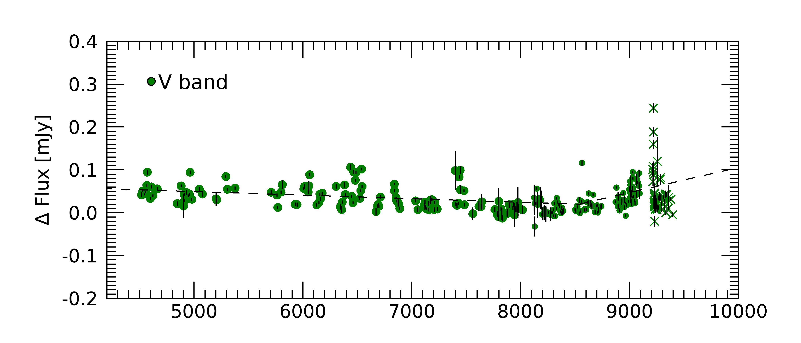
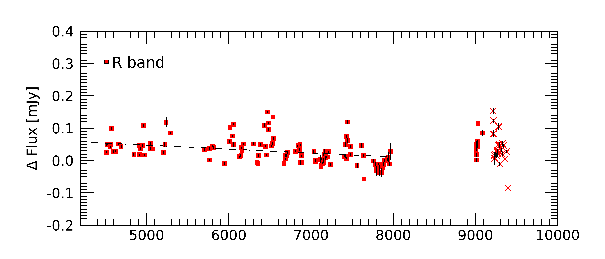
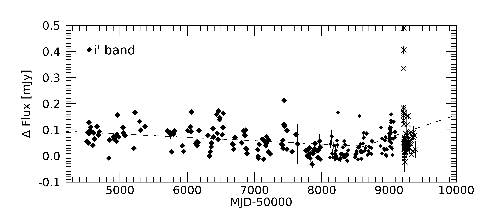
 و
و و، المحصلة بعد طرح التضمين الجيبي من المنحنيات الضوئية الأصلية. تُعرض فقط النقاط السابقة لبداية القيد الشمسي في 2020. وفوقها تُظهر الخطوط المتقطعة الملاءات الخطية للاتجاهات طويلة الأمد حيثما أمكن. رُسمت الرصدات المكتسبة أثناء الاندلاع المُخفق 2020/2021 برمز ’x’ للمقارنة.
و، المحصلة بعد طرح التضمين الجيبي من المنحنيات الضوئية الأصلية. تُعرض فقط النقاط السابقة لبداية القيد الشمسي في 2020. وفوقها تُظهر الخطوط المتقطعة الملاءات الخطية للاتجاهات طويلة الأمد حيثما أمكن. رُسمت الرصدات المكتسبة أثناء الاندلاع المُخفق 2020/2021 برمز ’x’ للمقارنة.4.2 توهج 2020/2021
بعد انتهاء القيد الشمسي، في 2020 ديسمبر 30 (MJD 59213)، وُجد أن Cen X-4 أشد لمعاناً بكثير عند الأطوال الموجية البصرية مما كان عليه سابقاً (Saikia et al., 2021)، مع ازدياد في اللمعان قدره و قدر في الحزمتين  و، على التوالي، مقارنة بالنقطة السابقة.
وخلال الأيام الأولى من النشاط، وُجد أن ارتفاع الانبعاث البصري حاد، مع زيادة في الفيض قدرها مقدار و مقدار في
و، على التوالي، مقارنة بالنقطة السابقة.
وخلال الأيام الأولى من النشاط، وُجد أن ارتفاع الانبعاث البصري حاد، مع زيادة في الفيض قدرها مقدار و مقدار في  أيام (أي حتى 2020 يناير 5؛ MJD 59219) في الحزمتين
أيام (أي حتى 2020 يناير 5؛ MJD 59219) في الحزمتين  و، على التوالي.
ومن رصدنا طويل الأمد لـ Cen X-4 باستخدام LCO، يمتلك تضمين المصدر نصف سعة قدره قدر، وهو أصغر بكثير مما يلزم لتفسير سعة التغيرية.
غير أن التوهج، بدلاً من أن يدخل في اندلاع كامل، بلغ ذروته في MJD (2021 يناير 5-6) في جميع الحزم البصرية، ثم بدأ يخفت سريعاً بمعدل حاد مماثل لما كان عليه أثناء الارتفاع (فاقداً قدر في أيام في جميع الحزم)، وبلغ مستويات السكون مرة أخرى في MJD (2021 يناير 14)، بعد أيام من الذروة. وبما أن اندلاعاً حقيقياً لم تتح له فرصة البدء، فإننا نصنف هذا النشاط الخاص على أنه “اندلاع مُخفق”.
و، على التوالي.
ومن رصدنا طويل الأمد لـ Cen X-4 باستخدام LCO، يمتلك تضمين المصدر نصف سعة قدره قدر، وهو أصغر بكثير مما يلزم لتفسير سعة التغيرية.
غير أن التوهج، بدلاً من أن يدخل في اندلاع كامل، بلغ ذروته في MJD (2021 يناير 5-6) في جميع الحزم البصرية، ثم بدأ يخفت سريعاً بمعدل حاد مماثل لما كان عليه أثناء الارتفاع (فاقداً قدر في أيام في جميع الحزم)، وبلغ مستويات السكون مرة أخرى في MJD (2021 يناير 14)، بعد أيام من الذروة. وبما أن اندلاعاً حقيقياً لم تتح له فرصة البدء، فإننا نصنف هذا النشاط الخاص على أنه “اندلاع مُخفق”.
بالنظر إلى الشكل 5، نلاحظ أنه قبل بدء القيد الشمسي بقليل، كانت بضع كشوفات تقع فوق مستوى السكون الذي تشير إليه الملاءمة الخطية عند جميع الأطوال الموجية. غير أن هذه الزيادة في الفيض تبدو قابلة للمقارنة مع مقدار النشاط المرصود عادة أثناء السكون في Cen X-4 (انظر الشكل 5). لذلك نعد من غير المرجح أن تمثل هذه النقاط بداية الاندلاع المُخفق، الذي يُرجح أنه بدأ أثناء القيد الشمسي أو عند نهايته.
4.2.1 التغيرية البصرية قصيرة الأمد
أدت رصدات REM التي أُجريت أثناء الاندلاع المُخفق في 2021 يناير 5 (MJD 59219) إلى منحنيات ضوئية بصرية تُظهر تغيرية (الشكل 6، اللوحة اليسرى).
اتباعاً لـ Vaughan et al. (2003)، قيّمنا الجذر التربيعي المتوسط الكسري (rms) للمنحنيات الضوئية من أجل قياس التغيرية في الحزم و و، وقسنا rms كسرياً قدره و و في الحزم و و، على التوالي. ومن ثم فإن التغيرية الذاتية قابلة للمقارنة في جميع الحزم.
في الحزمة ، تُرصد تغيرية شديدة، بفارق  قدر بين أدنى وأعلى نقطة في المنحنى الضوئي (وrms كسري قدره . غير أن تغيرية مشابهة جداً تُرصد أيضاً لنجم مقارنة ذي لمعان مماثل في الحزمة ، ولذلك نميل إلى نسبها إلى التهدب القوي في صور الحزمة .
قدر بين أدنى وأعلى نقطة في المنحنى الضوئي (وrms كسري قدره . غير أن تغيرية مشابهة جداً تُرصد أيضاً لنجم مقارنة ذي لمعان مماثل في الحزمة ، ولذلك نميل إلى نسبها إلى التهدب القوي في صور الحزمة .
تُرصد تغيرية مشابهة ذات دلالة أعلى في منحنى ضوئي مدته 22.5 دقيقة حصلنا عليه في اليوم نفسه (MJD 59219؛ يناير 5) باستخدام LCO في الحزمة ، وله rms كسري قدره ، لمنحنى ضوئي بدقة زمنية قدرها s. أما منحنى ضوئي في الحزمة بالدقة الزمنية نفسها، حصلنا عليه في نهاية حلقة التوهج باستخدام LCO في MJD 59234 (2021 يناير 20)، فله تغيرية أقصر زمناً وأقل بكثير (rms كسري قدره ؛ الشكل 6، اللوحة اليمنى). وعلى الرغم من أن قيمة rms الكسري قابلة للمقارنة، فإن هذه التغيرية تُرصد على مقاييس زمنية أطول بكثير (دقائق؛ الشكل 6) مقارنة بمصادر مثل BH XRBs GX 339-4 أو MAXI J1535-571 (ثوانٍ أو أقل)، التي نُسبت التغيرية فيها إلى وجود نفاثة وامضة (مثلاً Gandhi et al. 2010; Baglio et al. 2018). لذلك من غير المرجح أن تُنسب التغيرية البصرية المرصودة إلى انبعاث نفاثات في النظام.
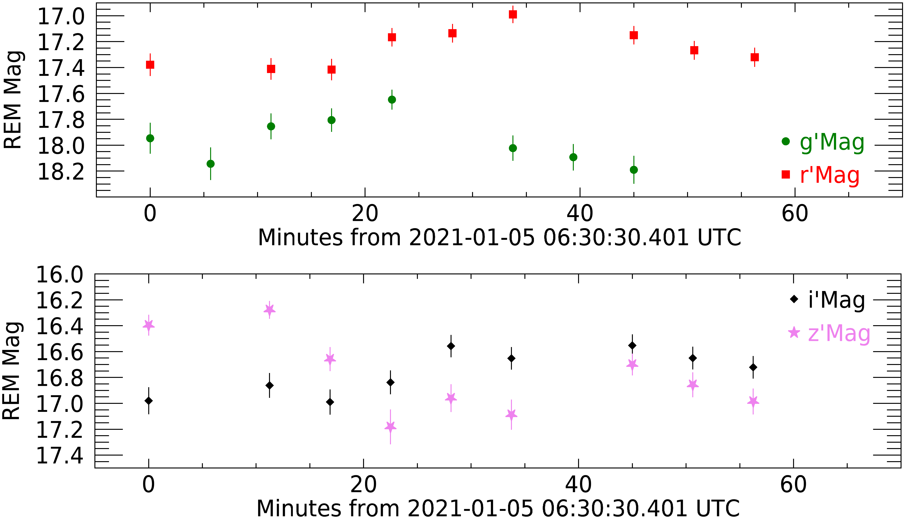
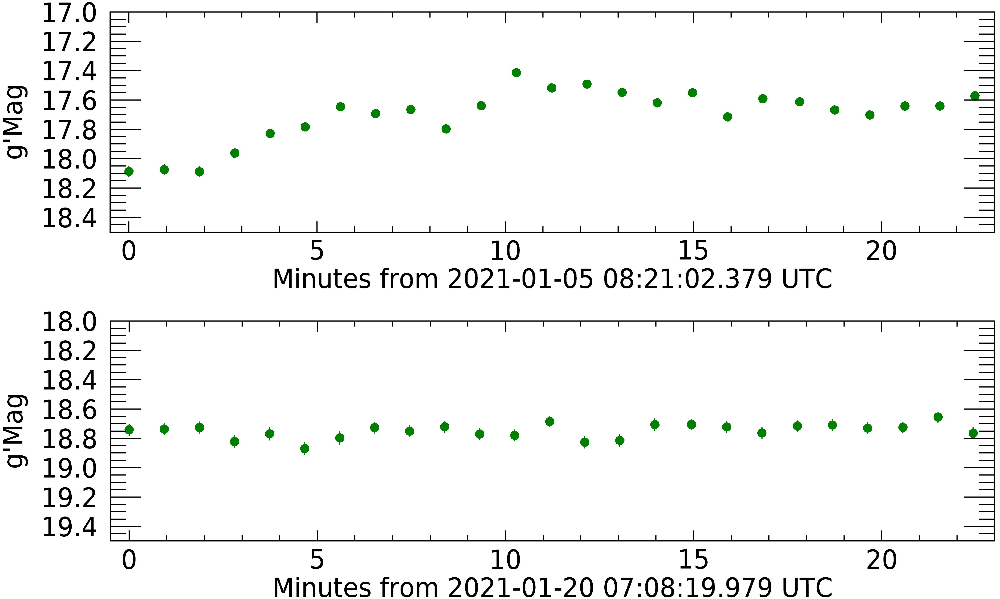
4.2.2 الأشعة السينية
بدأت التغطية السينية لتوهج 2020/2021 في MJD 59211 (ديسمبر 28 2020). وتُظهر منحنيات Swift/XRT وNICER الضوئية في الشكل 2 أن التوهج السيني بلغ ذروته في وقت قريب من ذروة البصري، بين MJD 58918 وMJD 59221 (يناير 4 ويناير 7 2021). ويكشف منحنى NICER الضوئي (ذو الدقة الزمنية الأعلى) عن تغيرية قوية (بعوامل قدرها 2–3) على مقياس زمني من ساعات قرب ذروة التوهج. ويُظهر تحليل البيانات الأرشيفية أن معدلات عد الذروة في الأشعة السينية المرصودة أثناء توهج 2020/2021 كانت أعلى بعامل  2 (Swift/XRT) و
2 (Swift/XRT) و 2.5 (NICER) من معدلات العد العظمى لـ Cen X-4 في رصدات أُجريت قبل ديسمبر 2020، عندما كان المصدر في حالة سكون.
2.5 (NICER) من معدلات العد العظمى لـ Cen X-4 في رصدات أُجريت قبل ديسمبر 2020، عندما كان المصدر في حالة سكون.
لم تكن الأطياف التي حُصل عليها من معظم رصدات Swift وGTIs الخاصة بـ NICER ذات جودة كافية لإجراء ملاءات طيفية مفصلة. وباستخدام XSPEC V12.11.1 (Arnaud, 1996)، أجرينا ملاءمة لطيف NICER ذي أعلى معدل عد (MJD 59220.373038، أول GTI من الرصدة 3652010501، بزمن تعريض  1250 s). وكان الهدف الرئيسي من هذه الملاءمة الطيفية الحصول على عامل تحويل موثوق من معدل العد إلى الفيض يمكن استخدامه لتقدير فيض الاندلاع (انظر القسم 5.3)، بافتراض أن الشكل الطيفي لم يتغير تغيراً كبيراً أثناء الاندلاع. أُعيد تجميع طيف NICER إلى حد أدنى قدره 30 عدات لكل حاوية طيفية بحيث يمكن استخدام ملاءمة
1250 s). وكان الهدف الرئيسي من هذه الملاءمة الطيفية الحصول على عامل تحويل موثوق من معدل العد إلى الفيض يمكن استخدامه لتقدير فيض الاندلاع (انظر القسم 5.3)، بافتراض أن الشكل الطيفي لم يتغير تغيراً كبيراً أثناء الاندلاع. أُعيد تجميع طيف NICER إلى حد أدنى قدره 30 عدات لكل حاوية طيفية بحيث يمكن استخدام ملاءمة  . واتباعاً لـ Cackett et al. (2010) وChakrabarty et al. (2014)، اللذين درسا الأطياف الساكنة المتغيرة لـ Cen X-4، لاءمنا طيف 0.5–10 keV بنموذج متصل يتكون من مكون حراري وآخر غير حراري. استخدمنا للمكون الحراري نموذج غلاف النجم النيوتروني الجوي لـ Heinke et al. (2006) (nsatmos في XSPEC)، واستخدمنا للمكون غير الحراري قانون قوة؛ ولم يمتد نطاق NICER إلى طاقات عالية بما يكفي لاختبار نماذج أكثر تعقيداً للمكون غير الحراري (كما فُعل في Chakrabarty et al. 2014، على سبيل المثال). ونُمذج الامتصاص بين النجمي بنموذج tbabs في XSPEC، مع تعيين الوفرة إلى WILM والمقاطع العرضية إلى VERN. وبالنسبة إلى مكون nsatmos ثبتنا كتلة النجم النيوتروني عند 1.9 (Shahbaz et al., 2014b) والمسافة عند 1.2 kpc. يلائم النموذج البيانات جيداً (
. واتباعاً لـ Cackett et al. (2010) وChakrabarty et al. (2014)، اللذين درسا الأطياف الساكنة المتغيرة لـ Cen X-4، لاءمنا طيف 0.5–10 keV بنموذج متصل يتكون من مكون حراري وآخر غير حراري. استخدمنا للمكون الحراري نموذج غلاف النجم النيوتروني الجوي لـ Heinke et al. (2006) (nsatmos في XSPEC)، واستخدمنا للمكون غير الحراري قانون قوة؛ ولم يمتد نطاق NICER إلى طاقات عالية بما يكفي لاختبار نماذج أكثر تعقيداً للمكون غير الحراري (كما فُعل في Chakrabarty et al. 2014، على سبيل المثال). ونُمذج الامتصاص بين النجمي بنموذج tbabs في XSPEC، مع تعيين الوفرة إلى WILM والمقاطع العرضية إلى VERN. وبالنسبة إلى مكون nsatmos ثبتنا كتلة النجم النيوتروني عند 1.9 (Shahbaz et al., 2014b) والمسافة عند 1.2 kpc. يلائم النموذج البيانات جيداً ( =145 لـ 145 درجة حرية)؛ ونحصل على
=145 لـ 145 درجة حرية)؛ ونحصل على  قدره 6.52(1) cm-2، ودرجة حرارة للنجم النيوتروني log(=6.24
قدره 6.52(1) cm-2، ودرجة حرارة للنجم النيوتروني log(=6.24 0.05، ونصف قطر نجم نيوتروني قدره 9.6
0.05، ونصف قطر نجم نيوتروني قدره 9.6 1.3 km، ودليل قانون قوة قدره 0.73
1.3 km، ودليل قانون قوة قدره 0.73 0.18. وكان الفيض غير الممتص في نطاق 0.5–10 keV هو (1.95
0.18. وكان الفيض غير الممتص في نطاق 0.5–10 keV هو (1.95 0.10) erg cm-2 s-1 (مناظراً لسطوع قدره erg s-1 عند 1.2 kpc)، مع مساهمة قانون القوة بنسبة
0.10) erg cm-2 s-1 (مناظراً لسطوع قدره erg s-1 عند 1.2 kpc)، مع مساهمة قانون القوة بنسبة  50% في نطاق 0.5–10 keV. ويعطي ذلك عامل تحويل من معدل العد إلى الفيض قدره
50% في نطاق 0.5–10 keV. ويعطي ذلك عامل تحويل من معدل العد إلى الفيض قدره  2.6 erg cm-2 cts-1. ودليل قانون القوة البالغ 0.73 منخفض جداً مقارنة بـ NS LMXBs في مجال سطوع أعلى قليلاً (؛ انظر، مثلاً، Wijnands et al., 2015; Stoop et al., 2021) حيث يكون الدليل نحو 2.5، لكنه متسق مع أدنى القيم التي وجدها (Cackett et al., 2010) لـ Cen X-4. ونلاحظ أن الملاءمة بقانون قوة منفرد لا تؤدي أداءً جيداً، إذ تعطي
2.6 erg cm-2 cts-1. ودليل قانون القوة البالغ 0.73 منخفض جداً مقارنة بـ NS LMXBs في مجال سطوع أعلى قليلاً (؛ انظر، مثلاً، Wijnands et al., 2015; Stoop et al., 2021) حيث يكون الدليل نحو 2.5، لكنه متسق مع أدنى القيم التي وجدها (Cackett et al., 2010) لـ Cen X-4. ونلاحظ أن الملاءمة بقانون قوة منفرد لا تؤدي أداءً جيداً، إذ تعطي  =246 لـ 147 درجة حرية (دليل قانون قوة قدره 3.37
=246 لـ 147 درجة حرية (دليل قانون قوة قدره 3.37 0.07 و قدره 2.6(2)
0.07 و قدره 2.6(2) cm-2).
cm-2).
5 مناقشة
5.1 الرصد البصري طويل الأمد
رصدنا السلوك البصري الساكن طويل الأمد لـ Cen X-4 مدة تقارب 13.5 سنوات، منذ 14 فبراير 2008. وبعد أخذ التضمين الناتج عن النجم المرافق في الحسبان، عزلنا نشاط التراكم في المصدر ولاحظنا اتجاهاً خطياً هبوطياً تبعه اتجاه صعودي أشد انحداراً أثناء السكون. ومن الازدياد البصري التدريجي في اللمعان المكتشف في منحنى الضوء طويل الأمد لـ Cen X-4، تنبأ Waterval et al. (2020) بأن Cen X-4 قد يدخل في اندلاع في المستقبل القريب. وبعد ذلك كُشف نشاط توهجي للمصدر في الأطوال الموجية البصرية (Saikia et al. 2021، Baglio et al. 2021) وفي الأشعة السينية (van den Eijnden et al., 2021b).
يتنبأ DIM بفيض بصري يزداد باستمرار أثناء السكون (Lasota, 2001)، لكن رصدات كل من LMXBs والمستعرات القزمة تُظهر عادة فيضاً ثابتاً أو متناقصاً مع الزمن، كما نرصد لـ Cen X-4 في رصدنا البصري. وقد أُبلغ عن سلوك مشابه جداً في BH XRB V404 Cyg (Bernardini et al., 2016b)، حيث رُصد انخفاض في اللمعان قدره 0.1 قدر على مدى أيام، وربط بتغيرات في معدل التراكم من سنة إلى أخرى (كما يُرجح أن يكون الحال في Cen X-4 أيضاً). تلا هذا الاضمحلال تعزيز منخفض السعة وسريع نسبياً للانبعاث البصري (زيادة قدرها 0.1 قدر خلال أيام)، وكان ذلك دلالة على زيادة في معدل تراكم الكتلة، انتهت في النهاية باندلاع المصدر في 2015. ومن المصادر السينية العابرة الأخرى التي شوهد فيها ارتفاع بصري بطيء ومهم بالتزامن مع اندلاع، BH XRBs GS 1354-64 (BW Cir؛ Koljonen et al. 2016) وSwift J1357.2-0933 (Russell et al., 2018). وبالمثل، رُصد ارتفاع بصري بطيء أثناء السكون في BH XRBs H1705-250 وGRS 1124-68 (انظر Yang et al. 2012 وWu et al. 2016، على التوالي؛ وانظر أيضاً الجدول 1 في Russell et al. 2018 لملخص)، على الرغم من عدم اكتشاف اندلاع جديد لهذه المصادر حتى الآن.
رغم اختلاف المقاييس الزمنية، رُصد حديثاً أيضاً سابق بصري لاندلاع في النظام NS LMXB SAX J1808.4-3658 (Goodwin et al., 2020)، الذي شهد اندلاعاً كاملاً في أغسطس 2019. ولوحظ أن المقدار البصري يتذبذب بمقدار  قدر مدة
قدر مدة  8 أيام قبل أن يبدأ الارتفاع الفعلي للاندلاع في البصري. ويمكن أن يكون لهذا السابق البصري عدة أصول ممكنة: نقل كتلة معزز من النجم المرافق، مما يساعد بعد ذلك على إطلاق الاندلاع؛ أو حالات عدم استقرار في القرص الخارجي، يمكن أن تؤدي إلى جبهات تسخين تنتشر عبر القرص كله وتسهم في إشعال الاندلاع؛ أو تغيرات في ضغط إشعاع النابض، إذا كان الجسم المدمج نابضاً ملّي ثانية.
وبالمثل، اقتُرحت أيضاً بصمات لنشاط بصري معزز قبيل بدء اندلاع في النظام NS LMXB IGR J00291+5934، حيث تهيمن على منحناه الضوئي البصري أنشطة توهج ووميض قبل بداية الاندلاع، مخفية تماماً التضمين الجيبي للنجم المرافق (Baglio et al., 2017).
8 أيام قبل أن يبدأ الارتفاع الفعلي للاندلاع في البصري. ويمكن أن يكون لهذا السابق البصري عدة أصول ممكنة: نقل كتلة معزز من النجم المرافق، مما يساعد بعد ذلك على إطلاق الاندلاع؛ أو حالات عدم استقرار في القرص الخارجي، يمكن أن تؤدي إلى جبهات تسخين تنتشر عبر القرص كله وتسهم في إشعال الاندلاع؛ أو تغيرات في ضغط إشعاع النابض، إذا كان الجسم المدمج نابضاً ملّي ثانية.
وبالمثل، اقتُرحت أيضاً بصمات لنشاط بصري معزز قبيل بدء اندلاع في النظام NS LMXB IGR J00291+5934، حيث تهيمن على منحناه الضوئي البصري أنشطة توهج ووميض قبل بداية الاندلاع، مخفية تماماً التضمين الجيبي للنجم المرافق (Baglio et al., 2017).
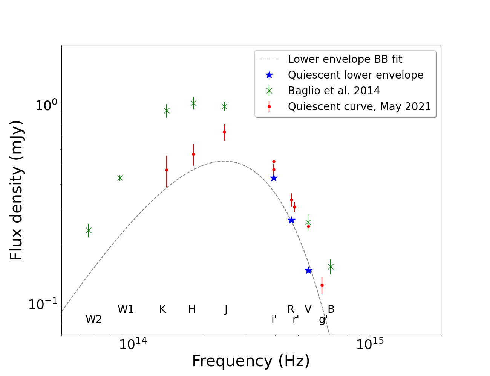
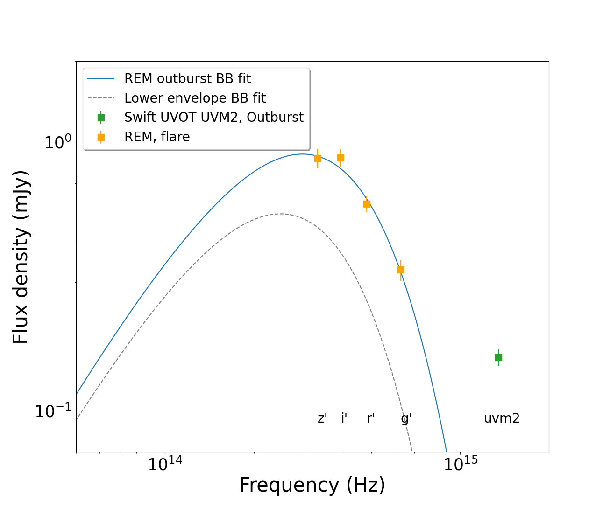
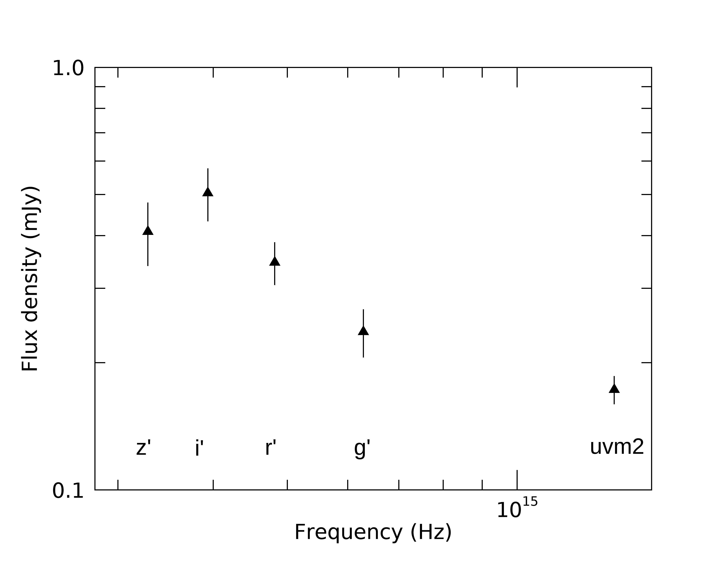
يدعم تعزيز الفيض البصري المؤدي إلى النشاط التوهجي المرصود في Cen X-4 نموذج DIM مع التشعيع وتبخر/تكاثف القرص (Dubus et al., 2001)، الذي يفسر آليات تطور الاندلاع-السكون عند جميع الأطوال الموجية في الثنائية السينية. ويتنبأ DIM بأنه أثناء السكون يتراكم القرص البارد كتلة من النجم المرافق عبر فيض فص روش، وأن ذلك يسبب الازدياد التدريجي في لمعان القرص عند الأطوال الموجية البصرية (Lasota, 2001). وعموماً، يُتوقع حدوث اندلاع عندما يبلغ قرص التراكم كثافة حرجة. ثم تزداد درجة حرارة القرص، مسببة تأين الهيدروجين فيه. وتنتشر جبهة التسخين هذه عبر القرص أقرب إلى جريان التراكم الداخلي، مسببة تعزيز النشاط في نطاقات موجية أعلى طاقة مثل الأشعة السينية، ويبدأ الاندلاع.
لذلك يمكن تفسير الازدياد التدريجي في لمعان Cen X-4 أثناء السكون بأنه مادة تتراكم ببطء في قرص التراكم وتصبح أشد لمعاناً بصرياً. ويمكن لكمية المادة في القرص، التي تزداد سنة بعد سنة، أن تفسر الفيض البصري المتزايد المرصود (على غرار ما حدث في V404 Cyg؛ Bernardini et al. 2016b). غير أن نشاط التوهج البصري والسيني في Cen X-4 لم يؤد إلى اشتعال اندلاع حقيقي، لأسباب سنناقشها في الأقسام التالية.
5.2 الاندلاع المُخفق
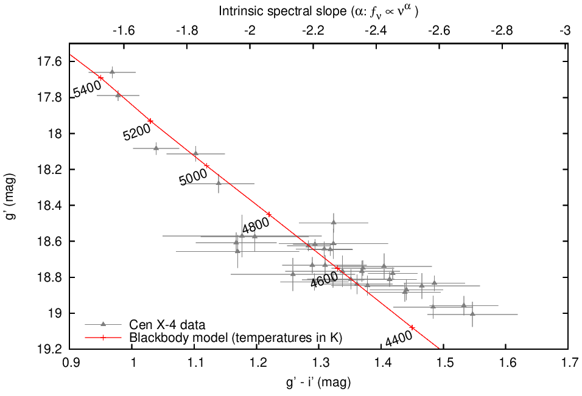
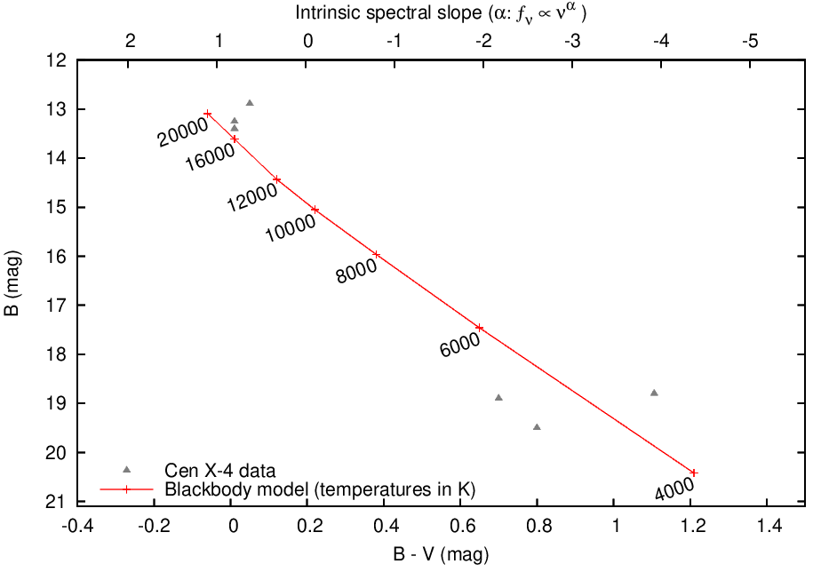
 مقابل ) أثناء اندلاع 1979 لـ Cen X-4. يمثل الخط الأحمر المتصل نموذج الجسم الأسود الذي يصف البيانات على أفضل وجه. ولا تتوافر في الأدبيات أخطاء نقاط الحزمة
مقابل ) أثناء اندلاع 1979 لـ Cen X-4. يمثل الخط الأحمر المتصل نموذج الجسم الأسود الذي يصف البيانات على أفضل وجه. ولا تتوافر في الأدبيات أخطاء نقاط الحزمة  ، ولذلك لا تُرسم.
، ولذلك لا تُرسم. 5.2.1 توزيع الطاقة الطيفي
من أجل إلقاء الضوء على طبيعة الاندلاع المُخفق، بنينا توزيعات طاقة طيفية أثناء فترة النشاط (باستخدام بيانات Swift/UVOT وREM التي حُصل عليها في يناير 4-5 2021) وأثناء السكون (باستخدام بيانات REM وLCO المكتسبة في مايو 22-23 2021). وللقيام بذلك، صُححت الفيوض من الاحمرار باستخدام معامل الامتصاص قدر كما ورد في Russell et al. (2006)، ومع اعتماد علاقات Cardelli et al. (1989) لتقييم معاملات الامتصاص عند جميع الأطوال الموجية. وعلى الرغم من أن المنحنيات الضوئية توضح بالفعل أن كلا من القرص والنجم المرافق يسهم في انبعاث السكون والتوهج لـ Cen X-4، فقد حاولنا نمذجة توزيعي الطاقة الطيفية بدالة جسم أسود مُشعَّع بسيطة، باستخدام المعلمات المعروفة للنجم المرافق (نصف قطر وكتلة ؛ Shahbaz et al. 1993; Torres et al. 2002; Shahbaz et al. 2014a). ويمثل هذا بالطبع تحذيراً منهجياً، بالنظر إلى عدم إضافة جسم أسود متعدد درجات الحرارة للقرص إلى النموذج؛ ولتحديد أدق لمساهمة قرص التراكم نحيل القارئ إلى القسم 5.2.2. وبما أن ملاءمة المربعات الصغرى غير حساسة لمعلمة سطوع التشعيع، ثبتناها عند السطوع السيني المقاس البالغ أثناء السكون (Campana et al., 2004)، وعند أثناء التوهج، كما قُدر من رصدات Swift المنجزة في 2021 يناير 4 (هذا العمل). وتُعرض النتائج في الشكل 7.
تعطي ملاءمة SED الساكن المحصل باستخدام REM وLCO في مايو 2021 (اللوحة العليا من الشكل 7) نتائج قابلة للمقارنة بما أُبلغ عنه في Baglio et al. (2014)، مع درجة حرارة جسم أسود قدرها ، متسقة مع نجم من نوع K5V، كما هو متوقع لـ Cen X-4 (Shahbaz et al. 1993; Torres et al. 2002). غير أننا نلاحظ أن فيوض NIR التي نقيسها برصدات REM لدينا أدنى من الفيوض المفهرسة الواردة في 2MASS والمنشورة في Baglio et al. 2014 (مرسومة كرمز ‘x’ رمادي في الشكل 7، اللوحة العليا). وبالنظر إلى أن بيانات 2MASS اكتُسبت في 2001، فمن المحتمل جداً أن مساهمة قرص التراكم عند الترددات البصرية وNIR كانت مختلفة عما كانت عليه في 2021 (وأيضاً بالنظر إلى الاتجاه طويل الأمد المرصود في الشكل 1)، مما يفسر التباين.
بالإضافة إلى ذلك، رسمنا أيضاً في الشكل 7 (اللوحة العليا) الفيوض  و
و و المحصلة كمتوسط انبعاث الغلاف السفلي من رصد LCO الطويل لـ Cen X-4 (الشكل 4). وهذه الفيوض هي أكثر الحدود العليا تقييداً لمساهمة النجم المرافق. الفيوض أدنى من تلك المقاسة في السكون باستخدام LCO بعامل 1.7 و1.3 و1.2 في الحزم
و المحصلة كمتوسط انبعاث الغلاف السفلي من رصد LCO الطويل لـ Cen X-4 (الشكل 4). وهذه الفيوض هي أكثر الحدود العليا تقييداً لمساهمة النجم المرافق. الفيوض أدنى من تلك المقاسة في السكون باستخدام LCO بعامل 1.7 و1.3 و1.2 في الحزم  و
و و، على التوالي. وتُعطي ملاءمة النقاط الثلاث بجسم أسود درجة حرارة قدرها K، ما يزال متسقاً مع نجم متأخر النوع.
و، على التوالي. وتُعطي ملاءمة النقاط الثلاث بجسم أسود درجة حرارة قدرها K، ما يزال متسقاً مع نجم متأخر النوع.
تعطي ملاءمة SED للتوهج (الشكل 7، اللوحة السفلى) بنموذج النجم المُشعَّع جسماً أسود ذا درجة حرارة أعلى، K. ولا يمكن وصف النقطة فوق البنفسجية أثناء التوهج بهذا النموذج المبسط للنجم المُشعَّع، مما يوحي بأصل في المناطق الداخلية من القرص متعدد درجات الحرارة أثناء تسخنه، أو، كما ورد في Bernardini et al. (2016a) لرصدات أثناء السكون، ببقعة حارة على حافة القرص. وللأسف لا تسمح بياناتنا بالحسم في ذلك.
ثم طرحنا الجسم الأسود الناتج من ملاءمة فيوض الغلاف السفلي من SED للتوهج. وتُعرض النتيجة في الشكل 8.
يبلغ SED المتبقي ذروته دون الحزمة ؛ وهذا يوحي بمكون متبقٍّ ذي درجة حرارة (وفق قانون إزاحة فين، ، حيث و هو طول موجة الذروة). ومن المرجح إذن أننا نرصد الانبعاث من قرص تراكم بارد، في مرحلة التراكم السابقة لبداية اندلاع (ونلاحظ أن درجة حرارة القرص عند بداية الاندلاع، وفق مخطط اللون-القدر الموضح في الشكل 9، هي بالفعل ). وفي الشكل 8، تظهر أيضاً الزيادة فوق البنفسجية.
هو طول موجة الذروة). ومن المرجح إذن أننا نرصد الانبعاث من قرص تراكم بارد، في مرحلة التراكم السابقة لبداية اندلاع (ونلاحظ أن درجة حرارة القرص عند بداية الاندلاع، وفق مخطط اللون-القدر الموضح في الشكل 9، هي بالفعل ). وفي الشكل 8، تظهر أيضاً الزيادة فوق البنفسجية.
5.2.2 مخطط اللون-القدر
درسنا مخطط اللون-القدر (CMD)، مقابل ، لـ Cen X-4 باستخدام بيانات LCO وREM (الشكل 9، اللوحة اليسرى) المحصلة أثناء الاندلاع المُخفق. وفوق ذلك نرسم نموذج الجسم الأسود لقرص تراكم، الذي يصور تطور جسم أسود أحادي درجة الحرارة وثابت المساحة يسخن ويبرد (للتفاصيل: Maitra and Bailyn 2008; Russell et al. 2011; Zhang et al. 2019b). وفي النموذج، تحدد تغيرات اللون الأصول المختلفة للانبعاث عند الترددات البصرية: عند درجات الحرارة المنخفضة، ذيل رايلي-جينز للجسم الأسود؛ وعند درجات الحرارة العالية، قمة الجسم الأسود المنحنية. نلاحظ أن هذا النموذج يفترض أن كل الفيض المنبعث من المصدر آتٍ من قرص التراكم، دون أي مساهمة من مصادر أخرى (مثل النجم المرافق)، في حين يفترض النموذج المعروض في القسم 5.2.1 أن النجم المرافق المُشعَّع ينتج كل الفيض. ومع أنه من الواضح أن كلاً من النجم والقرص يسهمان في انبعاث Cen X-4، فإننا نعد هذه الاختبارات مفيدة لإلقاء الضوء على المساهمات المختلفة في عمليات الانبعاث.
طبقنا نموذج القرص على Cen X-4 اتباعاً لـ Russell et al. (2011)، بافتراض انطفاء بصري قدره قدر (Russell et al., 2006)، يُستخدم لتحويل اللون إلى دليل طيفي ذاتي (مبين على المحور العلوي في الشكل 9). وتعتمد درجة حرارة الجسم الأسود على هذا اللون، في حين يعتمد تطبيع النموذج على عدة معلمات مختلفة؛ من بينها حجم الجسم الأسود والمسافة إلى المصدر. وبما أن بعض هذه المعلمات غير مؤكدة، غيّرنا تطبيع النموذج حتى بلغنا تقريباً مرضياً للبيانات (انظر الطرائق في Maitra and Bailyn 2008، Russell et al. 2011، Zhang et al. 2019b، Baglio et al. 2020).
يقارب النموذج البيانات جيداً، مظهراً اتجاهاً متسقاً مع جسم أسود حراري. لذلك نفسر هذا الجسم الأسود بأنه للجسم الخارجي من قرص التراكم (فمساحة سطح النجم أصغر بكثير من مساحة القرص). ومن المثير للاهتمام أن درجة حرارة القرص تبقى منخفضة طوال التوهج كله، ولا تتجاوز أبداً . وهذا يتفق أيضاً مع SED المتبقي أثناء الاندلاع المُخفق بعد طرح مساهمة النجم المرافق (الشكل 8)، حيث رصدنا ذروة دون تردد الحزمة ، مما يوحي بقرص تراكم بارد ().
نلاحظ أن الهيدروجين يُتوقع أن يكون متعادلاً تماماً دون K (ومؤيناً تماماً فوق  K؛ Lasota 2001).
لذلك من المرجح أن درجة الحرارة اللازمة لبدء موجة التسخين في القرص، ومن ثم إطلاق اندلاع كامل، لم تُبلغ قط أثناء نشاط 2020/2021. وهذه الحالة خاصة بهذا الاندلاع “المُخفق”، كما يمكن تقدير ذلك من اللوحة اليمنى في الشكل 9، حيث يُعرض CMD (اللون مقابل
K؛ Lasota 2001).
لذلك من المرجح أن درجة الحرارة اللازمة لبدء موجة التسخين في القرص، ومن ثم إطلاق اندلاع كامل، لم تُبلغ قط أثناء نشاط 2020/2021. وهذه الحالة خاصة بهذا الاندلاع “المُخفق”، كما يمكن تقدير ذلك من اللوحة اليمنى في الشكل 9، حيث يُعرض CMD (اللون مقابل  ) لـ Cen X-4 أثناء اندلاع 1979 (مع بضع نقاط ساكنة)، فوق نموذج جسم أسود يفترض التطبيع نفسه كما أثناء نشاط 2020/2021. وفي هذا الاندلاع، بلغ قرص التراكم وتجاوز درجة حرارة 10000K، مما ضمن التأين الكامل للهيدروجين في القرص، كما يتطلب DIM لحدوث اندلاع كامل. وعلى وجه الخصوص، توجد ألمع نقطة في CMD قرب ذروة اندلاع 1979. ويُظهر هذا أن البيانات قرب ذروة اندلاع 1979 قريبة جداً من النموذج نفسه المستخدم لوصف نشاط 2020/2021، مما يعزز فكرة أننا شهدنا اندلاعاً مُخفقاً في Cen X-4 في 2021.
) لـ Cen X-4 أثناء اندلاع 1979 (مع بضع نقاط ساكنة)، فوق نموذج جسم أسود يفترض التطبيع نفسه كما أثناء نشاط 2020/2021. وفي هذا الاندلاع، بلغ قرص التراكم وتجاوز درجة حرارة 10000K، مما ضمن التأين الكامل للهيدروجين في القرص، كما يتطلب DIM لحدوث اندلاع كامل. وعلى وجه الخصوص، توجد ألمع نقطة في CMD قرب ذروة اندلاع 1979. ويُظهر هذا أن البيانات قرب ذروة اندلاع 1979 قريبة جداً من النموذج نفسه المستخدم لوصف نشاط 2020/2021، مما يعزز فكرة أننا شهدنا اندلاعاً مُخفقاً في Cen X-4 في 2021.
5.2.3 الارتباط متعدد الأطوال الموجية
أداة أخرى لفصل عمليات الانبعاث وفهم طبيعة الاندلاع المُخفق الأخير هي دراسة الارتباطات متعددة الأطوال الموجية.
درسنا الارتباط البصري/السيني للمصدر أثناء طور التوهج، باستخدام كشوفات LCO في الحزمة ورصدات الأشعة السينية شبه المتزامنة من NICER (المأخوذة ضمن 1 ساعة). ولتحويل معدل العد في الأشعة السينية إلى فيض، نستخدم دليل قانون قوة قدره 1.7 0.3 (Bernardini et al., 2013) ونطاق الطاقة نفسه (0.5-10 keV).
0.3 (Bernardini et al., 2013) ونطاق الطاقة نفسه (0.5-10 keV).
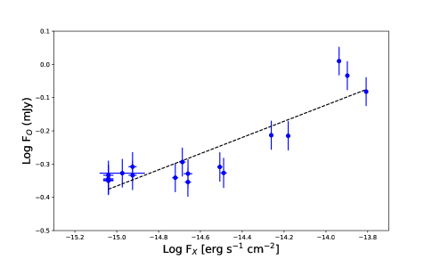
 ’ وبيانات الأشعة السينية من NICER (0.5-10 keV).
’ وبيانات الأشعة السينية من NICER (0.5-10 keV).نجد ارتباطاً معنوياً بين الانبعاث البصري والسيني للمصدر أثناء نشاط التوهج (معامل ارتباط Pearson = 0.89 وقيمة p = ؛ انظر الشكل 10). وكان Cackett et al. (2013) قد وجد سابقاً، عندما كان المصدر في السكون، عدم وجود ارتباط معنوي بين الفيوض السينية والبصرية المتزامنة، في حين رُصد ارتباط موجب بين الفيض السيني والفيض القريب من فوق البنفسجي المتزامن. ولاحقاً، وجد Bernardini et al. (2016a) دليلاً على ارتباط بصري (الحزمة  ) وفوق بنفسجي وسيني في السكون على مقاييس زمنية مختلفة. وكان ميل الارتباط الموجود للاندلاع والسكون ، مبيناً أن التشعيع أصبح مهماً عند السطوعات العالية، لكن الميل أكثر ضحالة مما يُتوقع للتشعيع قرب السكون.
) وفوق بنفسجي وسيني في السكون على مقاييس زمنية مختلفة. وكان ميل الارتباط الموجود للاندلاع والسكون ، مبيناً أن التشعيع أصبح مهماً عند السطوعات العالية، لكن الميل أكثر ضحالة مما يُتوقع للتشعيع قرب السكون.
لاءمنا البيانات أثناء الاندلاع المُخفق باستخدام طريقة انحدار المسافة المتعامدة للمربعات الصغرى، ووجدنا أن ميل الارتباط البصري/السيني يساوي 0.25 0.03، مما يدل على أن التشعيع لا يؤدي دوراً مهيمناً (الميل المتوقع لقرص مُشعَّع هو
0.03، مما يدل على أن التشعيع لا يؤدي دوراً مهيمناً (الميل المتوقع لقرص مُشعَّع هو  0.5، van Paradijs and McClintock, 1994). أما الميل المرصود فسيكون بدلاً من ذلك أكثر اتساقاً مع قرص تراكم مسخن لزجياً (يمكن أن ينتج ميلاً
0.5، van Paradijs and McClintock, 1994). أما الميل المرصود فسيكون بدلاً من ذلك أكثر اتساقاً مع قرص تراكم مسخن لزجياً (يمكن أن ينتج ميلاً  0.3، اعتماداً على الطول الموجي وعلى طبيعة الجسم المدمج؛ Russell et al., 2006)، أو مع توليفة من الاثنين (مثلاً
0.3، اعتماداً على الطول الموجي وعلى طبيعة الجسم المدمج؛ Russell et al., 2006)، أو مع توليفة من الاثنين (مثلاً  0.4 في GRS 1716-249، Saikia et al., 2022). وبالنسبة إلى قرص مسخن لزجياً، رُصد اعتماد على الطول الموجي لميل الارتباط البصري/السيني في XRBs (Russell et al., 2006). وللتحقق من ذلك، درسنا ميل الارتباط باستخدام الحزم البصرية الأربع المتاحة أثناء الاندلاع المُخفق ( و و
0.4 في GRS 1716-249، Saikia et al., 2022). وبالنسبة إلى قرص مسخن لزجياً، رُصد اعتماد على الطول الموجي لميل الارتباط البصري/السيني في XRBs (Russell et al., 2006). وللتحقق من ذلك، درسنا ميل الارتباط باستخدام الحزم البصرية الأربع المتاحة أثناء الاندلاع المُخفق ( و و و؛ الجدول 1). وعلى الرغم من أن القيم المختلفة المحصلة كانت ضمن مجال خطأ 1-سيغما، فقد وجدنا اتجاهاً طفيفاً لازدياد الميل مع ازدياد التردد (بقيم 0.25
و؛ الجدول 1). وعلى الرغم من أن القيم المختلفة المحصلة كانت ضمن مجال خطأ 1-سيغما، فقد وجدنا اتجاهاً طفيفاً لازدياد الميل مع ازدياد التردد (بقيم 0.25 0.03 للحزمة ، و0.24
0.03 للحزمة ، و0.24 0.04 للحزمة ، و0.30
0.04 للحزمة ، و0.30 0.04 للحزمة ، و0.35
0.04 للحزمة ، و0.35 0.06 للحزمة ). ويقوي هذا الاستنتاج الحجة بأن الانبعاث البصري ينشأ من قرص تراكم مسخن لزجياً. ومن معامل الارتباط البصري/السيني، يمكننا استبعاد أن يكون للانبعاث البصري أثناء نشاط التوهج أصل في نفاثة سنكروترونية (إذ يكون الميل المتوقع لها أشد انحداراً بكثير،
0.06 للحزمة ). ويقوي هذا الاستنتاج الحجة بأن الانبعاث البصري ينشأ من قرص تراكم مسخن لزجياً. ومن معامل الارتباط البصري/السيني، يمكننا استبعاد أن يكون للانبعاث البصري أثناء نشاط التوهج أصل في نفاثة سنكروترونية (إذ يكون الميل المتوقع لها أشد انحداراً بكثير،  0.7، Russell et al., 2006).
0.7، Russell et al., 2006).
5.3 نموذج DIM والاندلاعات من الداخل إلى الخارج
وفقاً لـ DIM، عندما يكون XRB في حالة سكون يكون قرص تراكمه بارداً ومستنزفاً. غير أن انتقال الكتلة من النجم المرافق، الذي يحدث بمعدلات منخفضة، يعيد ملء القرص حتى تصبح الكثافة السطحية عند حلقة معينة عالية بما يكفي لبلوغ الكثافة الحرجة التي لا يمكن عندها الحفاظ على الاتزان الحراري. وهذا يجعل درجة حرارة الحلقة ترتفع فوق درجة حرارة تأين الهيدروجين، وتبدأ جبهتا تسخين مختلفتان في الانتشار إلى الداخل وإلى الخارج. تُرصد الاندلاعات من الداخل إلى الخارج غالباً في XRBs (مع أن جبهات التسخين لا تزال تنتشر في الاتجاهين؛ Menou et al., 2000)، لأنها تمتلك عادة معدلات تراكم منخفضة (g/s؛ van Paradijs 1996; Smak 1984; Menou et al. 1999). وفي ظل هذه الظروف، سيكون زمن التراكم أطول من الزمن اللزج للانتشار، ولن تتمكن المادة من التراكم عند الحافة الخارجية للقرص، مما يؤدي إلى انتشار إلى الداخل. وبما أن معدل التراكم يتناقص مع نصف القطر، ستتراكم المادة بعد ذلك عند نقطة معينة إلى أن تبلغ الكثافة السطحية الحرجة لعدم الاستقرار الحراري، مطلقةً اندلاعاً من الداخل إلى الخارج (Lasota, 2001). وتنتشر الاندلاعات من الداخل إلى الخارج عادة ببطء (Menou et al., 2000)؛ فالجبهة المتجهة إلى الخارج تواجه في الواقع مناطق ذات كثافة أعلى أثناء انتشارها (كما أن الكثافة الحرجة تكون أعلى عند أنصاف أقطار أكبر). وإذا لم تنقل الجبهة مادة كافية لرفع الكثافة عند نصف قطر معين فوق الكثافة الحرجة، فسيتوقف الانتشار، وستتولد موجة تبريد (تنتشر إلى الداخل) تمنع حدوث الاندلاع. ومن المثير للاهتمام أن تفسيراً مشابهاً أُعطي أيضاً لما يسمى اندلاعات الانتقال الفاشل، أي الاندلاعات التي لا تبلغ الحالة العالية/اللينة (Alabarta et al., 2021). تتعرض LMXBs عادة لتشعيع قوي، وهو أمر مهم يجب أخذه في الحسبان في DIM (Dubus et al. 2001; انظر أيضاً Tetarenko et al. 2018، حيث استُخدمت بيانات فعلية لاختبار DIM مع التشعيع). لا يؤثر التشعيع في بنية جبهة التسخين، لكنه مهم لتحديد المدة التي ستتمكن فيها جبهة التسخين المتجهة إلى الخارج من الانتشار. ففي الواقع، مع انتشار الجبهة من الداخل إلى الخارج، يرتفع معدل تراكم الكتلة عند نصف قطر القرص الداخلي، مما يزيد تشعيع القرص البارد الخارجي. ونتيجة لذلك، يسخن القرص الخارجي، مما يخفض الكثافة الحرجة اللازمة لحدوث عدم الاستقرار الحراري، جاعلاً انتشار الجبهة الخارجية أسهل.
نقدر معدل تراكم الكتلة  لـ Cen X-4 أثناء الاندلاع المُخفق باستخدام رصدنا بالأشعة السينية. كملنا معدلات العد على كامل الاندلاع وحولناها إلى فيض، باستخدام عامل التحويل من معدل العد إلى الفيض المحصل من الملاءمة الطيفية في القسم 4.2.2. ونحسب السطوع باعتماد مسافة 1.2 kpc. وباستخدام (حيث
لـ Cen X-4 أثناء الاندلاع المُخفق باستخدام رصدنا بالأشعة السينية. كملنا معدلات العد على كامل الاندلاع وحولناها إلى فيض، باستخدام عامل التحويل من معدل العد إلى الفيض المحصل من الملاءمة الطيفية في القسم 4.2.2. ونحسب السطوع باعتماد مسافة 1.2 kpc. وباستخدام (حيث  هو السطوع السيني، و و هما نصف القطر والكتلة النموذجيان لنجم نيوتروني، و هو ثابت الجاذبية؛ ونلاحظ أننا نفترض أن كل الأشعة السينية ناتجة عن التراكم)، ومع إدراج عامل كفاءة قدره
هو السطوع السيني، و و هما نصف القطر والكتلة النموذجيان لنجم نيوتروني، و هو ثابت الجاذبية؛ ونلاحظ أننا نفترض أن كل الأشعة السينية ناتجة عن التراكم)، ومع إدراج عامل كفاءة قدره  في تحويل الطاقة الثقالية إلى سطوع (Frank et al., 1987)، نقدر معدل تراكم كتلة قدره g/s، وهو أدنى بكثير من معدل تراكم الكتلة الحرج اللازم لتحقيق اندلاعات من الخارج إلى الداخل55
5
حتى عند الفيض السيني الأعظمي أثناء الاندلاع المُخفق، لم يبلغ إلا g/s، أي أدنى بمقدار
في تحويل الطاقة الثقالية إلى سطوع (Frank et al., 1987)، نقدر معدل تراكم كتلة قدره g/s، وهو أدنى بكثير من معدل تراكم الكتلة الحرج اللازم لتحقيق اندلاعات من الخارج إلى الداخل55
5
حتى عند الفيض السيني الأعظمي أثناء الاندلاع المُخفق، لم يبلغ إلا g/s، أي أدنى بمقدار  رتب مقدار من معدل تراكم الكتلة الحرج. (مع مراعاة معلمات Cen X-4 المدارية، g/s؛ Lasota, 2001). لذلك من المرجح أن جبهة انتشار من الداخل إلى الخارج قد اشتعلت قرب نصف القطر الداخلي لقرص التراكم. وعند وقت الاشتعال، كانت درجة حرارة قرص التراكم وفق نمذجة CMD (الشكل 9) تساوي
رتب مقدار من معدل تراكم الكتلة الحرج. (مع مراعاة معلمات Cen X-4 المدارية، g/s؛ Lasota, 2001). لذلك من المرجح أن جبهة انتشار من الداخل إلى الخارج قد اشتعلت قرب نصف القطر الداخلي لقرص التراكم. وعند وقت الاشتعال، كانت درجة حرارة قرص التراكم وفق نمذجة CMD (الشكل 9) تساوي  .
غير أن ما نرصده في الشكل 9 ليس ارتفاعاً في درجة حرارة القرص، بل درجة حرارة تتناقص مع الزمن من إلى وما دون. إضافة إلى ذلك، يبين ميل الارتباط السيني/البصري دوراً ضعيفاً للتشعيع في الانبعاث من النظام، بما يتفق مع دراسات سابقة أُجريت أثناء السكون (انظر مثلاً D’Avanzo et al. 2006)، ويرجح أن ذلك بسبب معدل تراكم الكتلة المنخفض جداً وبسبب الحجم الكبير للنظام.
ومن الممكن أنه ما إن بدأت الجبهة في الانتشار إلى الخارج، كان بعض التشعيع يحدث فعلاً، لكن أثره كان منخفضاً مقارنة بجميع مصادر الانبعاث الأخرى في البصري (مثل النجم المرافق والقرص الخارجي المستقر، الذي يبعث في البصري). ولذلك سيخفف الانبعاث البصري الكلي أثر التشعيع، مفسراً الميل الضحل للارتباط البصري-السيني.
إضافة إلى ذلك، يُعد Cen X-4 أحد XRBs ذات أكبر أقراص التراكم المعروفة في الأدبيات، بسبب دوره المداري الطويل (
.
غير أن ما نرصده في الشكل 9 ليس ارتفاعاً في درجة حرارة القرص، بل درجة حرارة تتناقص مع الزمن من إلى وما دون. إضافة إلى ذلك، يبين ميل الارتباط السيني/البصري دوراً ضعيفاً للتشعيع في الانبعاث من النظام، بما يتفق مع دراسات سابقة أُجريت أثناء السكون (انظر مثلاً D’Avanzo et al. 2006)، ويرجح أن ذلك بسبب معدل تراكم الكتلة المنخفض جداً وبسبب الحجم الكبير للنظام.
ومن الممكن أنه ما إن بدأت الجبهة في الانتشار إلى الخارج، كان بعض التشعيع يحدث فعلاً، لكن أثره كان منخفضاً مقارنة بجميع مصادر الانبعاث الأخرى في البصري (مثل النجم المرافق والقرص الخارجي المستقر، الذي يبعث في البصري). ولذلك سيخفف الانبعاث البصري الكلي أثر التشعيع، مفسراً الميل الضحل للارتباط البصري-السيني.
إضافة إلى ذلك، يُعد Cen X-4 أحد XRBs ذات أكبر أقراص التراكم المعروفة في الأدبيات، بسبب دوره المداري الطويل ( hr)، وهو ما يمكن أن يفسر المستوى المنخفض من التشعيع الذي يتعرض له قرص التراكم الخارجي.
hr)، وهو ما يمكن أن يفسر المستوى المنخفض من التشعيع الذي يتعرض له قرص التراكم الخارجي.
لذلك نستنتج أن انتشار الجبهة المتجهة إلى الخارج قد توقف على الأرجح بعد وقت قصير من الاشتعال بسبب انخفاض معدل تراكم الكتلة وضعف أثر التشعيع، ويرتبط الأخير أيضاً بالحجم الكبير المعروف للنظام.
ونلاحظ أن طور الاضمحلال الحاد والقصير ( أيام) بعد ذروة الاندلاع المُخفق يتفق مع المستوى المنخفض من التشعيع الذي نرصده في هذا العمل. ففي الواقع، لا يمكن لجبهة التبريد التي تتولد بعد التوقف أن تنتشر إلا إذا وجدت فرعاً بارداً تهبط إليه (Lasota, 2001)؛ وهذا يعوقه أثر التشعيع، الذي يمكن أن يُبقي قرص التراكم حاراً، مولداً الاضمحلال الأسي والخطي الذي يُرصد عادة في XRBs شديدة التشعيع.
أيام) بعد ذروة الاندلاع المُخفق يتفق مع المستوى المنخفض من التشعيع الذي نرصده في هذا العمل. ففي الواقع، لا يمكن لجبهة التبريد التي تتولد بعد التوقف أن تنتشر إلا إذا وجدت فرعاً بارداً تهبط إليه (Lasota, 2001)؛ وهذا يعوقه أثر التشعيع، الذي يمكن أن يُبقي قرص التراكم حاراً، مولداً الاضمحلال الأسي والخطي الذي يُرصد عادة في XRBs شديدة التشعيع.
العوامل التي ربما أدت إلى اندلاع مُخفق كثيرة. ومن بينها، يسهم حجم النظام بالتأكيد، إذ يقلل أثر التشعيع وبالتالي يسهل توقف انتشار جبهة التسخين. لذلك نتنبأ بأنه كلما كان النظام أكبر، زاد احتمال حدوث أحداث مماثلة.
وبديلاً من ذلك، وكما اقتُرح أيضاً للسابق البصري لاندلاع 2019 في نابض الأشعة السينية الملّي ثانية المتراكم SAX J1808.4-3658 (Goodwin et al., 2020)، يمكن أن يكون الاندلاع المُخفق لـ Cen X-4 قد نتج عن عدم استقرار حراري محلي عند نصف قطر قريب من نصف القطر الداخلي للقرص، حيث كانت الكثافة قريبة من الكثافة الحرجة التي يمكن عندها أن يبدأ إطلاق الاندلاع الكامل (مثلاً Menou et al., 2000, الشكل 7). ويمكن أن يصلح هذا التفسير لـ Cen X-4، بالنظر إلى أن درجة الحرارة في القرص ظلت دائماً دون K (أي درجة حرارة تأين الهيدروجين). ولو كان الاندلاع الكامل قد بدأ فعلاً في Cen X-4، لكان الاندلاع المُخفق الموصوف في هذا العمل سابقاً له.
6 الاستنتاجات
في هذا العمل نعرض الرصد البصري طويل الأمد للثنائية السينية منخفضة الكتلة ذات النجم النيوتروني Cen X-4 خلال السنوات 13.5 الماضية. قضى المصدر معظم هذا الوقت في حالة سكون؛ ويمكن عزل التضمين الإهليلجي الناتج عن انبعاث النجم المرافق، إلى جانب عدة تغيرات قصيرة المقياس الزمني في جميع الحزم البصرية، يرجح أنها ناتجة عن نشاط في قرص التراكم. وبعد طرح التوهجات والتضمين الإهليلجي الصادر عن النجم، يُظهر الفيض المتبقي اتجاهاً خطياً هبوطياً يمتد يوم، يتبعه اتجاه صعودي مدة نحو 1000 يوم، أشد انحداراً من الاتجاه الهبوطي بمقدار  مرة. وفي حالة الثنائية السينية ذات الثقب الأسود V404 Cyg (Bernardini et al., 2016b)، سبق اتجاه صعودي مشابه في الفيض بداية اندلاع في 2015. غير أنه على الرغم من رصد زيادة كبيرة في اللمعان في بداية 2021 عند جميع الأطوال الموجية (NIR–الأشعة السينية)، لم ينطلق اندلاع حقيقي في حالة Cen X-4، الذي عاد إلى السكون بعد بضعة أسابيع من بداية هذا النشاط المعزز. ونطلق على هذا السلوك اسم “اندلاع مُخفق”، لأن درجة الحرارة اللازمة لتأين الهيدروجين وبدء الاندلاع لم تُبلغ.
وتُظهر نمذجة مخطط اللون-القدر أثناء الاندلاع المُخفق بجسم أسود أحادي درجة الحرارة قرص تراكم بدرجات حرارة دون ؛ وتتفق هذه النتيجة مع توزيع الطاقة الطيفي المتبقي، بعد طرح مساهمة النجم المرافق، وتشير إلى أن قرص التراكم لم يبلغ قط درجة الحرارة اللازمة لتأين الهيدروجين (على خلاف ما حدث أثناء الاندلاع الكامل 1979 للمصدر، عندما بلغ قرص التراكم، وفق نموذجنا، درجات حرارة قدرها ، حيث يكون الهيدروجين عادة مؤيناً تماماً).
مرة. وفي حالة الثنائية السينية ذات الثقب الأسود V404 Cyg (Bernardini et al., 2016b)، سبق اتجاه صعودي مشابه في الفيض بداية اندلاع في 2015. غير أنه على الرغم من رصد زيادة كبيرة في اللمعان في بداية 2021 عند جميع الأطوال الموجية (NIR–الأشعة السينية)، لم ينطلق اندلاع حقيقي في حالة Cen X-4، الذي عاد إلى السكون بعد بضعة أسابيع من بداية هذا النشاط المعزز. ونطلق على هذا السلوك اسم “اندلاع مُخفق”، لأن درجة الحرارة اللازمة لتأين الهيدروجين وبدء الاندلاع لم تُبلغ.
وتُظهر نمذجة مخطط اللون-القدر أثناء الاندلاع المُخفق بجسم أسود أحادي درجة الحرارة قرص تراكم بدرجات حرارة دون ؛ وتتفق هذه النتيجة مع توزيع الطاقة الطيفي المتبقي، بعد طرح مساهمة النجم المرافق، وتشير إلى أن قرص التراكم لم يبلغ قط درجة الحرارة اللازمة لتأين الهيدروجين (على خلاف ما حدث أثناء الاندلاع الكامل 1979 للمصدر، عندما بلغ قرص التراكم، وفق نموذجنا، درجات حرارة قدرها ، حيث يكون الهيدروجين عادة مؤيناً تماماً).
تفسير محتمل هو أن اندلاعاً من نوع الداخل إلى الخارج قد بدأ. تنتشر الاندلاعات من الداخل إلى الخارج عادة ببطء، لأن جبهة التسخين تلتقي مناطق ذات كثافة أعلى أثناء انتشارها إلى الخارج. فإذا لم تكن الجبهة تنقل مادة كافية، فسوف تتوقف ما لم يكن التشعيع قوياً بما يكفي لتسخين القرص الخارجي، مخفضاً الكثافة السطحية ومسهلاً الانتشار. غير أن التشعيع ضعيف في Cen X-4. ففي الواقع، يمتلك الارتباط البصري/السيني أثناء الاندلاع المُخفق ميلاً ضحلاً، غير متسق مع قرص شديد التشعيع؛ علاوة على ذلك، سبق أن أُبلغ في الماضي (انظر مثلاً D’Avanzo et al., 2006) أن آثار التشعيع منخفضة في Cen X-4، بما يتسق مع الحجم الكبير للنظام. لذلك من المرجح أن جبهة التسخين توقفت بعد وقت قصير من اشتعالها، مع إنتاج لاحق لجبهة تبريد معاكسة، أطفأت الاندلاع. وبديلاً من ذلك، يمكن أن يكون النشاط المرصود نتيجة عدم استقرار حراري-لزج محلي في القرص، حيث ازدادت درجات الحرارة من غير أن تبلغ (أو تتجاوز) درجة حرارة تأين الهيدروجين. لا يزال الرصد البصري لـ Cen X-4 جارياً، وسيُظهر ما إذا كان اندلاع مُخفق أو كامل جديد قد يحدث في المستقبل، مما يلقي مزيداً من الضوء على الآليات المحتملة التي تمنع إطلاق اندلاع كامل.
References
- Failed-transition outbursts in black hole low-mass X-ray binaries. MNRAS 507 (4), pp. 5507–5522. External Links: Document, 2107.10035 Cited by: §5.3.
- XSPEC: The First Ten Years. In Astronomical Data Analysis Software and Systems V, G. H. Jacoby and J. Barnes (Eds.), Astronomical Society of the Pacific Conference Series, Vol. 101, pp. 17. Cited by: §4.2.2.
- The puzzling case of the accreting millisecond X-ray pulsar IGR J00291+5934: flaring optical emission during quiescence. A&A 600, pp. A109. External Links: Document, 1701.02321 Cited by: §5.1.
- Optical and infrared polarimetry of the transient LMXB Centaurus X-4 in quiescence. A&A 566, pp. A9. External Links: Document, 1404.4051 Cited by: §4.1, Figure 7, §5.2.1.
- Probing Jet Launching in Neutron Star X-Ray Binaries: The Variable and Polarized Jet of SAX J1808.4-3658. ApJ 905 (2), pp. 87. External Links: Document, 2010.15176 Cited by: §1, §5.2.2.
- Fast high-amplitude optical variations in Cen X-4 during the brief flare episode seen with REM and LCO. The Astronomer’s Telegram 14332, pp. 1. Cited by: §5.1.
- A Wildly Flickering Jet in the Black Hole X-Ray Binary MAXI J1535-571. ApJ 867 (2), pp. 114. External Links: Document, 1807.08762 Cited by: §1, §4.2.1.
- New stellar encounters discovered in the second Gaia data release. A&A 616, pp. A37. External Links: Document, 1805.07581 Cited by: §2.
- Daily multiwavelength Swift monitoring of the neutron star low-mass X-ray binary Cen X-4: evidence for accretion and reprocessing during quiescence. MNRAS 436 (3), pp. 2465–2483. External Links: Document, 1307.2492 Cited by: §4.1, §5.2.3.
- On the Optical-X-Ray Correlation from Outburst to Quiescence in Low-mass X-Ray Binaries: The Representative Cases of V404 Cyg and Cen X-4. ApJ 826 (2), pp. 149. External Links: Document, 1604.08022 Cited by: §5.2.1, §5.2.3.
- Events leading up to the 2015 June Outburst of V404 Cyg. ApJ 818 (1), pp. L5. External Links: Document, 1601.04550 Cited by: §1, §4.1, §5.1, §5.1, §6.
- Systematic trends in Sloan Digital Sky Survey photometric data. MNRAS 424 (2), pp. 1584–1599. External Links: Document, 1205.5409 Cited by: §3.1.
- The Swift X-Ray Telescope. Space Sci. Rev. 120 (3-4), pp. 165–195. External Links: Document, astro-ph/0508071 Cited by: §3.3.
- The Swift X-Ray Telescope. Space Sci. Rev. 120 (3-4), pp. 165–195. External Links: Document, astro-ph/0508071 Cited by: §3.3.
- Optical and Near-infrared Monitoring of the Black Hole X-Ray Binary GX 339-4 during 2002-2010. AJ 143 (6), pp. 130. External Links: Document, 1203.5700 Cited by: §1.
- An X-ray-UV correlation in Cen X-4 during quiescence. MNRAS 433 (2), pp. 1362–1368. External Links: Document, 1210.4510 Cited by: §5.2.3.
- Quiescent X-ray Emission From Cen X-4: A Variable Thermal Component. ApJ 720 (2), pp. 1325–1332. External Links: Document, 1007.2823 Cited by: §4.2.2.
- Indirect Evidence of an Active Radio Pulsar in the Quiescent State of the Transient Millisecond Pulsar SAX J1808.4-3658. ApJ 614 (1), pp. L49–L52. External Links: Document, astro-ph/0408584 Cited by: §4.1, §5.2.1.
- Discovery of the optical counterpart of the transient X-ray burster CEN X-4.. ApJ 236, pp. L55–L59. External Links: Document Cited by: §2.
- Convective accretion disks and the onset of dwarf nova outbursts.. ApJ 260, pp. L83–L86. External Links: Document Cited by: §1.
- Accretion Instability Models for Dwarf Novae and X-Ray Transients. In Cataclysmic Variables and Low-Mass X-ray Binaries, D. Q. Lamb and J. Patterson (Eds.), pp. 307. External Links: Document Cited by: §1.
- The Relationship between Infrared, Optical, and Ultraviolet Extinction. ApJ 345, pp. 245. External Links: Document Cited by: §5.2.1.
- The isotopic 6̂Li/7̂Li ratio in Centaurus X-4 and the origin of Li in X-ray binaries. A&A 470 (3), pp. 1033–1041. External Links: Document, 0705.3350 Cited by: §2.
- A Hard X-Ray Power-law Spectral Cutoff in Centaurus X-4. ApJ 797 (2), pp. 92. External Links: Document, 1403.6751 Cited by: §4.2.2.
- Optical studies of transient low-mass X-ray binaries in quiescence. I. Centaurus X-4 : orbital period, light curve, spectrum and models forthe system.. A&A 210, pp. 114–126. Cited by: §2.
- The Recent Appearance of a New X-Ray Source in the Southern Sky. ApJ 157, pp. L157. External Links: Document Cited by: §2.
- The Multi-frequency Robotic facility REM: first results. Astronomische Nachrichten 325 (6), pp. 543–548. External Links: Document Cited by: §3.2.
- Doppler tomography of the transient X-ray binary Centaurus X-4 in quiescence. A&A 444 (3), pp. 905–912. External Links: Document, astro-ph/0508583 Cited by: §2.
- A search for evidence of irradiation in Centaurus X-4 during quiescence. A&A 460 (1), pp. 257–260. External Links: Document, astro-ph/0609580 Cited by: §5.3, §6.
- The disc instability model for X-ray transients: Evidence for truncation and irradiation. A&A 373, pp. 251–271. External Links: Document, astro-ph/0102237 Cited by: §1, §1, §5.1, §5.3.
- X-ray irradiation in low-mass binary systems. MNRAS 303 (1), pp. 139–147. External Links: Document, astro-ph/9809036 Cited by: §1.
- The light curves of low-mass X-ray binaries.. A&A 178, pp. 137–142. Cited by: §1, §5.3.
- Rapid optical and X-ray timing observations of GX339-4: multicomponent optical variability in the low/hard state. MNRAS 407 (4), pp. 2166–2192. External Links: Document, 1005.4685 Cited by: §4.2.1.
- The Neutron star Interior Composition Explorer (NICER): design and development. In Space Telescopes and Instrumentation 2016: Ultraviolet to Gamma Ray, J. A. den Herder, T. Takahashi, and M. Bautz (Eds.), Society of Photo-Optical Instrumentation Engineers (SPIE) Conference Series, Vol. 9905, pp. 99051H. External Links: Document Cited by: §3.4.
- The Neutron star Interior Composition ExploreR (NICER): an Explorer mission of opportunity for soft x-ray timing spectroscopy. In Space Telescopes and Instrumentation 2012: Ultraviolet to Gamma Ray, T. Takahashi, S. S. Murray, and J. A. den Herder (Eds.), Society of Photo-Optical Instrumentation Engineers (SPIE) Conference Series, Vol. 8443, pp. 844313. External Links: Document Cited by: §3.4.
- Enhanced optical activity 12 d before X-ray activity, and a 4 d X-ray delay during outburst rise, in a low-mass X-ray binary. MNRAS 498 (3), pp. 3429–3439. External Links: Document, 2006.02872 Cited by: §1, §1, §3.1, §5.1, §5.3.
- A review of the disc instability model for dwarf novae, soft X-ray transients and related objects. Advances in Space Research 66 (5), pp. 1004–1024. External Links: Document, 1910.01852 Cited by: §1.
- A Hydrogen Atmosphere Spectral Model Applied to the Neutron Star X7 in the Globular Cluster 47 Tucanae. ApJ 644 (2), pp. 1090–1103. External Links: Document, astro-ph/0506563 Cited by: §4.2.2.
- APASS DR10 Has Arrived! (Abstract). \jaavso 47 (1), pp. 130. Cited by: §3.2.
- Novalike Object in Centaurus. IAU Circ. 3369, pp. 1. Cited by: §2.
- Multiwavelength Observations of the 2002 Outburst of GX 339-4: Two Patterns of X-Ray-Optical/Near-Infrared Behavior. ApJ 624 (1), pp. 295–306. External Links: Document, astro-ph/0501349 Cited by: §1.
- Matplotlib: a 2d graphics environment. Computing in Science Engineering 9 (3), pp. 90–95. External Links: Document Cited by: §2.
- Multiwavelength Observations of the Black Hole Candidate XTE J1550-564 during the 2000 Outburst. ApJ 554 (2), pp. L181–L184. External Links: Document, astro-ph/0105115 Cited by: §1.
- Optical and X-Ray Observations of IGR J00291+5934 in Quiescence. ApJ 680 (1), pp. 615–619. External Links: Document Cited by: §4.1.
- Complete Multiwavelength Evolution of Galactic Black Hole Transients during Outburst Decay. I. Conditions for “Compact” Jet Formation. ApJ 779 (2), pp. 95. External Links: Document, 1310.5482 Cited by: §1.
- The 1979 X-ray outburst of CEN X-4.. ApJ 241, pp. 779–786. External Links: Document Cited by: §2.
- A ‘high-hard’ outburst of the black hole X-ray binary GS 1354-64. MNRAS 460 (1), pp. 942–955. External Links: Document, 1602.06414 Cited by: §5.1.
- The disc instability model of dwarf novae and low-mass X-ray binary transients. New A Rev. 45 (7), pp. 449–508. External Links: Document, astro-ph/0102072 Cited by: §1, §1, §1, §5.1, §5.1, §5.2.2, §5.3, §5.3, §5.3.
- Monitoring LMXBs with the Faulkes Telescopes. In A Population Explosion: The Nature & Evolution of X-ray Binaries in Diverse Environments, R. M. Bandyopadhyay, S. Wachter, D. Gelino, and C. R. Gelino (Eds.), American Institute of Physics Conference Series, Vol. 1010, pp. 204–206. External Links: Document, 0712.2751 Cited by: §1.
- Outburst Morphology in the Soft X-Ray Transient Aquila X-1. ApJ 688 (1), pp. 537–549. External Links: Document, 0807.3542 Cited by: §5.2.2, §5.2.2.
- The X-Ray Nova Centaurus X-4: Comparisons with A0620-00. ApJ 350, pp. 386. External Links: Document Cited by: §2, Figure 4, §4.1.
- Disc instability models for X-ray transients: evidence for evaporation and low -viscosity?. MNRAS 314 (3), pp. 498–510. External Links: Document, astro-ph/0001203 Cited by: §5.3, §5.3.
- Structure and properties of transition fronts in accretion discs. MNRAS 305 (1), pp. 79–89. External Links: Document, astro-ph/9811188 Cited by: §1, §5.3.
- Optical Observations of GRO J1655-40 in Quiescence. I. A Precise Mass for the Black Hole Primary. ApJ 477 (2), pp. 876–896. External Links: Document, astro-ph/9610211 Cited by: §1, §4.1.
- Orbital and quasi-periodic optical variations in the black hole X-ray binary V404 CYG. MNRAS 281 (3), pp. 1094–1104. External Links: Document Cited by: §4.1.
- An Empirical Background Model for the NICER X-ray Timing Instrument. arXiv e-prints, pp. arXiv:2105.09901. External Links: 2105.09901 Cited by: §3.4.
- The Swift Ultra-Violet/Optical Telescope. Space Sci. Rev. 120 (3-4), pp. 95–142. External Links: Document, astro-ph/0507413 Cited by: §3.3.
- Global optical/infrared-X-ray correlations in X-ray binaries: quantifying disc and jet contributions. MNRAS 371 (3), pp. 1334–1350. External Links: Document, astro-ph/0606721 Cited by: §2, §5.2.1, §5.2.2, §5.2.3.
- Evidence for a jet contribution to the optical/infrared light of neutron star X-ray binaries. MNRAS 379 (3), pp. 1108–1116. External Links: Document, 0705.3611 Cited by: §1.
- A tool to separate optical/infrared disc and jet emission in X-ray transient outbursts: the colour-magnitude diagrams of XTE J1550-564. MNRAS 416, pp. 2311–2317. External Links: 1106.1789, Document Cited by: §5.2.2, §5.2.2.
- Optical precursors to X-ray binary outbursts. Astronomische Nachrichten 340 (4), pp. 278–283. External Links: Document, 1903.04519 Cited by: §1, §1, §3.1.
- Optical Precursors to Black Hole X-Ray Binary Outbursts: An Evolving Synchrotron Jet Spectrum in Swift J1357.2-0933. ApJ 852 (2), pp. 90. External Links: Document, 1707.05814 Cited by: §4.1, §5.1.
- submitted. Cited by: §5.2.3.
- XB-NEWS detects a probable new outburst from Cen X-4 after 41 years. The Astronomer’s Telegram 14302, pp. 1. Cited by: §2, §4.2, §5.1.
- An ellipsoidal study of Centaurus X-4.. MNRAS 265, pp. 655–663. External Links: Document Cited by: §2, §5.2.1, §5.2.1.
- Aquila X-1: a low-inclination soft X-ray transient. MNRAS 296 (4), pp. 1004–1008. External Links: Document, astro-ph/9801240 Cited by: §1.
- The spotty donor star in the X-ray transient Cen X-4. MNRAS 440 (1), pp. 504–513. External Links: Document, 1402.1639 Cited by: §2, §5.2.1.
- The spotty donor star in the X-ray transient Cen X-4. MNRAS 440 (1), pp. 504–513. External Links: Document, 1402.1639 Cited by: §4.2.2.
- Accretion in cataclysmic binaries. IV. Accretion disks in dwarf novae.. Acta Astron. 34, pp. 161–189. Cited by: §1, §5.3.
- On the Growth-Curve Method for Calibrating Stellar Photometry with CCDs. PASP 102, pp. 932. External Links: Document Cited by: §3.1.
- Multiwavelength observations reveal a faint candidate black hole X-ray binary in IGR J17285-2922. MNRAS 507 (1), pp. 330–349. External Links: Document Cited by: §4.2.2.
- Understanding X-ray irradiation in low-mass X-ray binaries directly from their light-curves. MNRAS 480 (1), pp. 2–16. External Links: Document, 1807.01360 Cited by: §5.3.
- The ATLAS All-Sky Stellar Reference Catalog. ApJ 867 (2), pp. 105. External Links: Document, 1809.09157 Cited by: §3.1.
- Rotational broadening and Doppler tomography of the quiescent X-ray nova Centaurus X-4. MNRAS 334 (1), pp. 233–240. External Links: Document, astro-ph/0203406 Cited by: §2, §5.2.1, §5.2.1.
- ASASSN-18ey: The Rise of a New Black Hole X-Ray Binary. ApJ 867 (1), pp. L9. External Links: Document, 1808.07875 Cited by: §1.
- Cen X-4 returns to quiescent levels in X-ray, optical, and UV. The Astronomer’s Telegram 14317, pp. 1. Cited by: §2.
- Swift and NICER X-ray monitoring of the probable new outburst of Cen X-4. The Astronomer’s Telegram 14303, pp. 1. Cited by: §5.1.
- The NumPy array: a structure for efficient numerical computation. Computing in Science and Engineering 13 (2), pp. 22–30. External Links: Link, Document Cited by: §2.
- Absolute visual magnitudes of low-mass X-ray binaries.. A&A 290, pp. 133–136. Cited by: §5.2.3.
- On the Accretion Instability in Soft X-Ray Transients. ApJ 464, pp. L139. External Links: Document Cited by: §5.3.
- A comparison of soft x-ray transients and dwarf novae. In High Energy Transients in AstroPhysics, S. E. Woosley (Ed.), American Institute of Physics Conference Series, Vol. 115, pp. 49–62. External Links: Document Cited by: §1.
- On characterizing the variability properties of X-ray light curves from active galaxies. MNRAS 345 (4), pp. 1271–1284. External Links: Document, astro-ph/0307420 Cited by: §4.2.1.
- Long term fading and recent brightening in Cen X-4 in quiescence: precursor to an outburst?. The Astronomer’s Telegram 14254, pp. 1. Cited by: §2, §5.1.
- Low-level accretion in neutron star X-ray binaries. MNRAS 454 (2), pp. 1371–1386. External Links: Document, 1409.6265 Cited by: §4.2.2.
- Observations of the Optical Counterpart to XTE J1118+480 during Outburst by the Robotic Optical Transient Search Experiment I Telescope. ApJ 557 (2), pp. L97–L100. External Links: Document, astro-ph/0105420 Cited by: §1.
- The Mass of the Black Hole in the X-ray Binary Nova Muscae 1991. ApJ 825 (1), pp. 46. External Links: Document, 1601.00616 Cited by: §5.1.
- Quiescent X-ray/optical counterparts of the black hole transient H 1705-250. MNRAS 427 (4), pp. 2876–2880. External Links: Document, 1210.2417 Cited by: §5.1.
- The REM telescope: detecting the near infra-red counterparts of Gamma-Ray Bursts and the prompt behavior of their optical continuum. Astronomische Nachrichten 322, pp. 275–285. External Links: Document Cited by: §3.2.
- Bright Mini-outburst Ends the 12 yr Long Activity of the Black Hole Candidate Swift J1753.5-0127. ApJ 876 (1), pp. 5. External Links: Document, 1903.09455 Cited by: §1.
- Bright Mini-outburst Ends the 12 yr Long Activity of the Black Hole Candidate Swift J1753.5-0127. ApJ 876 (1), pp. 5. External Links: Document, 1903.09455 Cited by: §5.2.2, §5.2.2.
- Long-term optical/infrared variability in the quiescent X-ray transient V404 Cyg. MNRAS 352 (3), pp. 877–886. External Links: Document, astro-ph/0405061 Cited by: §4.1.
- Evidence for Optical Flares in Quiescent Soft X-Ray Transients. ApJ 582 (1), pp. 369–381. External Links: Document Cited by: §4.1.
- The 2005 Outburst of the Halo Black Hole X-Ray Transient XTE J1118+480. ApJ 644 (1), pp. 432–438. External Links: Document, astro-ph/0602222 Cited by: §1.